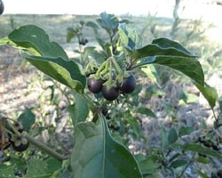
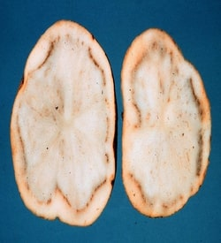

Mısır Bitkisinin İklim İstekleri
Mısırın Sıcaklık İsteği
Normal olarak mısır bitkisi 10-11 °C’de çimlenmeye başlayabilmektedir. 5-10 cm derinliğindeki toprak sıcaklığı 15 °C’ye ulaştığında çimlenme olayı hızlanır. Çimlenme sırasında, kök ve sap uzama miktarı ile sıcaklığın 10-30 °C arasında yer almasıyla doğrusal ilişkisi vardır. Sıcaklık 32 °C’ye ulaştığında kök ve sap uzamasında ani bir azalma görülür ve sıcaklık 40 °C’ye ulaşınca çimler ölür. Öte yandan sıcaklık 9 °C’nin altına düşerse de kök uzaması durur. Mısır üretimi için ideal sıcaklık 24-32 °C’ler arasıdır. Mısır bir sıcak iklim bitkisi olmasına rağmen aşırı sıcaklık isteyen bir bitki değildir. Sıcaklık 38 °C’ye ulaştığında sulama şartlarında bile transpirasyonla kaybettiği suyu kökler vasıtasıyla karşılayamaz. Bitki turgoritesini kaybeder. Bu durum birkaç gün devam ederse hücre yapısı esnekliğini kaybeder ve tekrar eski formuna dönemez. Tepe püskülü çıkışı ve tozlanma sırasında sıcaklık 32 °C’nin üzerine çıktığında üreme organlarındaki farklılaşma çok hızlı gelişir. Koçan püskülleri çabuk kurur. Bu nedenle püskü içerisinde polen tozlarının çimlenip tüpte ilerlemesini sağlayacak yeteri kadar rutubeti bulamaz. Polen keseleri kuruduğundan polenleri dışarıya çıkaramaz veya polenler kendi canlılıklarını kaybederler. Bunun sonucu olarak da koçanda tane bağlama oranı azdır.
Mısır Tarlası
Üreticilerin çoğu mısır bitkisinin sıcak gecelerde de iyi geliştiğine inanırlar. Halbuki durum bunun tam tersidir. Mısır bitkisi sıcak ve rutubetli gecelerde iyi bir gelişme göstermez. Sıcak ve rutubetli gecelerde solunum oldukça artar ve böylece daha çok enerji sarf edilir. Klimaya ihtiyaç duyulduğu geceler, mısırın gelişimi için uygun olmayan gecelerdir. Mısır için en ideali serin geceler, güneşli günler ve orta sıcaklıktır.
Işık İsteği
Döllenmeden sonraki ilk birkaç gün, verimi etkileyen diğer faktörler gibi ışıklanma açısından da bitkiler için kritik bir dönemdir. Bu konuda yapılan araştırmalarda; döllenmeden sonraki ilk 3 günlük dönemde % 90 gölgelenme (tam bulutluluk) bir melezin verimini % 25 düşürdüğünü; altı günlük gölgelenme % 71 düşürdüğü belirlenmiştir. Gölgelenmeye daha toleranslı bir melezde bile % 16-44 arasında verim azalması belirlenmiştir. Ancak güneş enerjisinin yüksek olduğu aşırı sıcak bir günde de bol ışık alan tepedeki yapraklarda bile yüksek sıcaklık, fotosentezin tamamen durabileceği unutulmamalıdır.
Ortalama Bağıl Nem İsteği
Mısır için optimum ve minimum bağıl nem değerleri sıcaklığa ve alınabilen su miktarına bağlı olmakla birlikte; genel olarak nem %60’ın altına düşmemesi gerekir. % 50 düzeylerine inen bağıl nem ortamında bitki, maksimum transpirasyondan sonra stomalarını kapatmak zorunda kalır. Nemin % 75’ten % 50’ye düşmesi su tüketimini iki katına çıkarır. Mısır bitkisinin özellikle tozlanma dönemindeki düşük hava neminden olumsuz etkilenmesi tane bağlamayı aksatır ve transpirasyonla su kayıplarını arttırır.

Döllenme stresi nem stresiyle birlikte % 6 dişi çiçekteyken her gün için % 3 verim kaybı yaparken,% 75 dişi çiçekteyken her gün için verim kaybı % 7 olduğu belirtilmektedir. Dane doldurma dönemdeki nem stresinden dolayı stresli her gün için verim düşüşünü % 4.1 olarak bulunmuştur.
Kuraklığın Mısır Bitkisi Üzerindeki Fiziksel Etkileri
Mısır bitkisi, kuraklık gibi su stresi koşullarına karşı oldukça hassastır ve bitkinin büyümesi ve verimliliği üzerinde olumsuz etkileri olabilir. Kuraklık, bitkinin fotosentez yapma sürecini ve su alımını etkileyerek bitkinin büyüme oranını azaltabilir. Aşırı kuraklık koşullarında ise bitki ölebilir.
Kuraklık, bitkinin yapraklarında da çeşitli fiziksel etkilere neden olabilir. Özellikle yaprakların uç kısımlarında kuruma, kıvrılma ve sararma görülebilir. Bu durum, bitkinin su kaybını azaltmak için yapraklarını küçültmesine ve su kaybını minimize etmek için stomalarını kapatmasına bağlıdır. Bu da bitkinin fotosentez yapma kapasitesini azaltır ve bitkinin büyümesini olumsuz etkiler.
Kuraklık aynı zamanda bitkinin kök sistemi üzerinde de olumsuz etkiler yaratabilir. Kuraklık koşullarında toprakta suyun azalması, bitkinin su alımını azaltır ve kök sistemi büyümesini engeller. Bu da bitkinin topraktan besinleri almasını zorlaştırır ve bitkinin büyüme oranını azaltabilir.

Susuz Mısır Tarlası
- Kuraklık ve ısı değişiminden, üstten birkaç yaprak yanık duruma geçer ve ölür.
- Sürekli Devam eden kuraklıkta genç yapraklar ölür ve sonunda tepe püskülü zarar görür, fonksiyonunu kaybeder.
- Solma, buruşma alt yapraklardan başlayarak bütün bitkilerde meydana gelir.
- Tepe püskülü öncesi meydana gelen kuraklık dolayısıyla bitki boyunda genelde azalmalar olmaktadır. Şayet yeterli su bulunursa bu kısalan bitkilerde yüksek verim verebilecek kapasitededir.
- Tozlanma zamanı meydana gelecek kuraklıktan dolayı tane bağlama oranı düşer. Bu durumda kuraklığın zararı : Çiçeklenme döneminde toprak neminin azlığı, tepe püskülü çıkışını hızlandırırken koçan püskülü çıkışını geciktirir. Bu da tepe püskülü ile koçan püskülü arasında uyumsuzluğu oluşturur
Sonuç olarak, kuraklık Mısır bitkisinin büyümesi ve verimliliği üzerinde olumsuz etkiler yaratabilir. Bu nedenle, sulama sistemlerinin doğru şekilde kullanılması ve bitkinin su ihtiyacının karşılanması, bitkinin kuraklık koşullarına karşı dayanıklılığını artırabilir. Ayrıca, genetik olarak daha dayanıklı bitki çeşitlerinin geliştirilmesi de önemlidir.
Mısır Dikiminde Toprak Hazırlığı
Mısır bitkisinin toprak seçiciliği fazla değildir. Uygun ve zamanında işlenen ve gerekli bitki besin maddeleri verilen değişik tip topraklarda mısır başarıyla yetiştirilebilir. Ancak, mısır bitkisi en iyi gelişmeyi ve en yüksek verimi organik madde ve bitki besin maddelerince zengin, drenajı ve havalanması iyi olan derin, sıcak, tınlı topraklarda gösterir. Aşırı asit ve aşırı alkali topraklar mısır yetiştiriciliği için uygun değildir. En uygun pH derecesi 6-7 değerleri arasındadır.

Kulaklı Pulluk Aleti
Ana Üründe Toprak Hazırlığı
Ana ürün mısır için en iyi tohum yatağı, ilk sürümü derin sürüm ile başlayan toprak işleme sistemidir. Derin sürüm işlemi, dipkazan, kulaklı pulluk, diskli pulluk ve çizel gibi toprak işleme aletleri ile yapılabilir.
İkinci Ürün Mısır Yetiştiriciliğinde Toprak Hazırlığı
İkinci ürün mısır yetiştiriciliğinde genellikle 3 değişik toprak işleme yöntemi kullanılır.
1. Klasik Toprak İşleme
Toprak pullukla derin sürüldükten sonra tohum yatağının hazırlanmasıdır. Fakat II. Ürün mısır yetiştiriciliği için maliyeti yüksekliğinden dolayı tercih edilmez.
2. Azaltılmış Toprak İşleme
Toprak işlemesinde pulluğun devreden çıkarılarak, goble, diskaro, rotatiller, rotavatör vs. aletlerle tohum yatağının hazırlanmasıdır.
3. Sıfır Toprak işleme
Toprak işlemesiz tarım (sıfır toprak işleme), tohumun toprakla teması için işlenmemiş toprakta uygun genişlik ve derinlikteki dar açıklıklara, çukurlara veya bantlara tohumun bırakılması ve örtülmesi olarak tanımlanabilir. Amerika Birleşik Devletleri’nde oldukça yaygınlaşan bu yöntem yurdumuzda henüz yaygın değildir.
II. ürün mısır yetiştiriciliğinde en uygun toprak işleme şekli azaltılmış toprak işleme şeklidir. Toprak işleme derinliği de 15 cm’den az olmamalıdır.
II. Ürün mısır yetiştiriciliğinde zamanın önemine binaen toprak hazırlığında ekim+ sulamanın, sulama + ekime göre 12-15 günlük erkencilik sağladığından dolayı bu ekim şekli önerilebilir. Bu sayede de II. Ürün için daha geç olan çeşitlerin yüksek verim kabiliyetinden faydalanılmış olur.

Diskaro Aleti
Toprak hazırlığının doğru belirlenmesi maliyetleri azaltacaktır.
| Yıllar | Mazot ₺/Litre |
|---|---|
| 2012 | 3.66 |
| 2013 | 3.99 |
| 2014 | 4.34 |
| 2015 | 4.39 |
| 2016 | 3.85 |
| 2017 | 4.29 |
| 2018 | 4.68 |
| 2019 | 6.44 |
| 2020 | 6.10 |
| 2021 | 8.29 |
| 2022 1.Yarı | 18.54 |
| 2022 2.Yarı | 24.61 |
| 2023 1.Çeyrek | 21.68 |
Kaynak : Opet İzmir Akaryakıt Fiyatları Arşivi | |
Mısır Bitkisinin Bakımı ve Ekimi
Mısır Bitkisinde Gübreleme
Mısır bitkisinin büyümesi için en önemli besin maddeleri azot, fosfor ve potasyumdur. Azot, bitkinin yaprakları, sapları ve kulakları için gerekli olan temel besin maddesidir. Fosfor, köklerin büyümesi, tohum oluşumu ve çimlenme için önemlidir. Potasyum, bitkinin su dengesini düzenler ve stresli koşullara karşı dayanıklılığını arttırır. Gübreleme programı, toprağın analizi yapılarak belirlenir. Toprağın pH, tuzluluk seviyesi ve besin elementleri gibi faktörler analiz edilir. Analiz sonuçlarına göre, bitkinin ihtiyaç duyduğu besin maddeleri belirlenir ve gübreleme programı oluşturulur.
Mısırda Gübreleme Nasıl Yapılır
Mısır tarımında azot, fosfor ve potasyum içeren gübrelerin tamamı ilkbaharda ilk toprak işlemesinden önce tarlaya santrifüjlü gübre dağıtma makinesi verilir ve kazayağı ile ekim derinliğine karıştırılır. Bunun haricinde ekim zamanında tarlaya kombine ekim makineleri ile tohumun 5 cm sağ veya sol yanına gelecek şekilde verilebilir.
Santrifüjlü Gübre Dağıtma Makinesi
Azotlu gübrelerin yarısı ekimle birlikte, diğer yarısı mısırın gelişme dönemlerine göre sıra arasına, bitkilerin yaprak ve büyüme noktalarında kalmayacak şekilde uygulanabilir. Mısır yetiştiriciliğinde sonbaharda dekara 1,5–2,0 ton çiftlik gübresi verilebilir. Çiftlik gübresi toprağın su tutma kapasitesini ve havalanmasını artırır, kaymak tabakası oluşumunu engeller, toprak işlemesi kolaylaşır ve bitki çıkışında problem yaşanmasına engel olur.
Azotlu Gübreleme
Mısır yetiştiriciliğinde genellikle amonyum sülfat, üre ve amonyum nitrat gibi azotlu gübreler kullanılmaktadır. Bu gübrelerden amonyum sülfat toprak asitliğini nötrleştirmek için tuzlu veya alkali topraklarda ekim öncesi veya ekimde tercih edilmeli, diğer nötr veya asit karakterli topraklarda ise üre veya amonyum nitrat gübreleri kullanılmalıdır. Mısıra azotlu gübreler iki dönemde verilmelidir. İlk kısmı ekimle birlikte toprağa verilmeli, ikinci bölümü bitkiler yaklaşık olarak 50–60 cm boylandığında ikinci çapa ile birlikte bitki sıralarının yanına banda verilmelidir. Gübreleme ana üründe: 21-24 kg /da saf azot, II üründe ise: 18-21 kg /da saf azot uygulanması gerekir.
Fosforlu Gübreleme
Mısır yetiştiriciliğinde genellikle triple süper fosfat gübresi kullanılmaktadır. Yapılan toprak analizi sonucu fosforlu gübre ihtiyacı görülürse tamamı ekim öncesi toprağa verilip karıştırılmalıdır. Saf halde verilecek 9-10 kg/da fosforlu gübrelerin dekardan en yüksek verimi almayı sağlayacağı bilinmektedir.
Potasyumlu Gübreleme
Ülkemiz toprakları genellikle potasyum bakımından zengindir. Bu sebeple toprak analizleri sonucu tavsiye edilmedikçe potasyumlu gübre kullanmaya gerek yoktur. Mısır yetiştiriciliğinde genellikle potasyum sülfat gübresi kullanılmaktadır. Bu gübre ekim öncesi veya ekimle birlikte verilebilir.
Sıra Arası Gübre Verme Makinesi
Kompoze Gübreler
Mısır yetiştiriciliğinde toprak ihtiyacına göre kompoze gübreler verilmelidir. Eğer toprağın fosfora ihtiyacı varsa 20:20:0 veya 18:46:0 gübresi ekim öncesi veya ekimle birlikte 30–35 kg/da verilmelidir.
İz Elementlerle Gübreleme
Topraktaki iz elementlerin eksikliği öncelikle yeşil gübreleme veya çiftlik gübresi uygulamaları ile giderilebilir. İz elementi eksikliği bulunan tarım alanlarına mümkün olduğunca ekim yapılmamalıdır. Fakat mısır ekimi zorunlu ise ve iz element noksanlığı varsa bu durumda, iz element gübrelemesi ekimden önce eriyik halinde toprak yüzüne serpilerek karıştırılmalıdır.
Bütün bitkilerde olduğu gibi mısır bitkisinde de gübreleme işlemi hem verim hem de maliyetler açısından tarımda önemli bir yere sahiptir. Ürününüze vereceğiniz gübreleri belirlemek için lütfen toprak analizi yaptırıp sonuçlarına göre gereken gübreleri bitkilerinize veriniz. Gerekli olan veya olmayan gübre verildiğinde verim ciddi oranda düşüşe uğrayacak ve maliyetleriniz artacaktır.
İşte Ülkemizdeki En Çok Tercih Edilen Gübrelerin 10 Yıl İçerisindeki Fiyat Değişimleri
| Yıllar | %21 Amonyum Sülfat (Ton/₺) | %26 CAN (Ton/₺) | Amonyum Nitrat (Ton/₺) | Üre %45 Azot (Ton/₺) | DAP (Ton/₺) | 20.20.0 (ton/TL) |
|---|---|---|---|---|---|---|
| 2012 | 641 ₺ | 761 ₺ | 880 ₺ | 1178 ₺ | 1465 ₺ | 1054 ₺ |
| 2013 | 623 ₺ | 813 ₺ | 920 ₺ | 1120 ₺ | 1330 ₺ | 960 ₺ |
| 2014 | 620 ₺ | 879 ₺ | 980 ₺ | 1159 ₺ | 1568 ₺ | 1062 ₺ |
| 2015 | 681 ₺ | 853 ₺ | 982 ₺ | 1176 ₺ | 1825 ₺ | 1260 ₺ |
| 2016 | 644 ₺ | 789 ₺ | 928 ₺ | 1035 ₺ | 1471 ₺ | 1062 ₺ |
| 2017 | 708 ₺ | 855 ₺ | 1220 ₺ | 1156 ₺ | 1538 ₺ | 1096 ₺ |
| 2018 | 1011 ₺ | 977 ₺ | 1250 ₺ | 1664 ₺ | 2383 ₺ | 1587 ₺ |
| 2019 | 1219 ₺ | 1222 ₺ | 1850 ₺ | 2018 ₺ | 2654 ₺ | 1892 ₺ |
| 2020 | 1700 ₺ | 1380 ₺ | 3000 ₺ | 3600 ₺ | 4000 ₺ | 2800 ₺ |
| 2021 1.Yarı | 1800 ₺ | 1480 ₺ | 3000 ₺ | 3800 ₺ | 3700 ₺ | 3600 ₺ |
| 2021 2.Yarı | 9796 ₺ | 11200 ₺ | 8200 ₺ | 12178 ₺ | 14600 ₺ | 8320 ₺ |
| 2022 1.Yarı | 13780 ₺ | 11300 ₺ | 10250 ₺ | 20980 ₺ | 21160 ₺ | 12160 ₺ |
| 2022 2.Yarı - 2023 1.Çeyrek | 8000 ₺ | 9000 ₺ | 11500 ₺ | 13700 ₺ | 15750 ₺ | 11000 ₺ |
Kaynak : Tarım Kredi Gübre Fiyatları ve Yerel Gübre Satıcıların Fiyat Tablosu
Mısır Bitkisinde Sulama ve Sulama Teknikleri
Mısır bitkisi, sulama gereksinimi yüksek olan bitkilerden biridir. Yeterli sulama olmazsa, bitkinin büyümesi ve verimi olumsuz etkilenebilir. Bu nedenle, mısır bitkisi sulama programı, bitkinin su gereksinimine göre belirlenmelidir. Ayrıca, toprağın nem içeriği, hava sıcaklığı, nem seviyesi ve rüzgâr gibi faktörler de sulama programını etkileyebilir.
Mısır bitkisinde sabah erken saatlerde yapılan kontrolde yapraklarda pörsüme ve kıvrılma görülürse sulamak gerekir. Diğer yöntemde toprak tavı elle kontrol edilir. Kök derinliğinden alınan toprak elle sıkıldığında dağılıyorsa sulama yapılmalıdır. Eğer toprak dağılmıyor ve elde de iz bırakıyorsa bitkinin suya ihtiyacı olmadığı anlaşılır.
Mısır bitkisinde farklı dönemlerde sulama yapılması gerekmektedir. Mısırda sulama dönemleri ayarlanırken topraktaki nemin solma noktasına inmemesi ve genellikle topraktaki yararlı suyun %50 oranına düşüp düşmediğine bakılmalıdır. Mısırın su ihtiyacı bakımından çimlenme ve çıkış, sapa kalkma, çiçeklenme ve dane dolum dönemleri olmak üzere dört kritik dönem bulunmaktadır.
Mısırda Su Zamanları
Mısırda Çıkış Sulaması
Ekim döneminde toprak tavında değilse, sulama yapılıp toprak tava geldikten sonra ekim yapılması ve çıkış olması amacıyla yapılmaktadır.
Sapa Kalkma Döneminde Yapılan Sulama
Sapa kalkma döneminde mısırda hızlı sap büyümesini ve koçan taslağının oluşumunu arttırarak verim artışını sağlamak amacıyla yapılmaktadır.
Çiçeklenme Döneminde Yapılan Sulama
bitkinin su ihtiyacının en üst seviyeye çıktığı dönemdir. Bu dönemde mısırdaki 1–2 günlük geçici solgunluk yaklaşık %20 verim düşüşüne sebep olur. Mısırda çeşide ve bölgenin ekolojisine bağlı olarak ekimden ortalama 60–70 gün çiçeklenme başlar. Tepe püskülleri çıkmadan hemen önce veya yaprak kümesi içinden henüz çıkarken mutlaka sulama yapılmalıdır.
Dane Dolum Döneminde Yapılan Sulama
Dane dolum döneminde yapılacak olan sulama, dane dolum süresini uzatacağından dane iriliğini ve ağırlığını artırarak verimi yükseltir.
Mısır bitkisi, sulama sıklığı ve su miktarı açısından değişen farklı sulama teknikleriyle sulanabilir. En yaygın mısır sulama teknikleri arasında, damla sulama, yüzey sulama ve yağmurlama sulama bulunmaktadır.
Damlama Sulama
Suyun bitkinin kök bölgesine doğrudan damlatılarak, su kaybını minimize eder. Bu yöntem, suyun doğrudan bitkinin kök sistemine gitmesine izin vererek, bitkinin suyu daha verimli kullanmasına yardımcı olur. Damlama sulama sistemi, toprağın nem seviyesini kontrol etmek için nem sensörleri kullanılarak otomatik olarak yönetilebilir. Mısır ve diğer bitkiler için en karlı, verimli ve uygun yöntemdir.

Mısırda Damlama Su Uygulaması
Yüzey Sulama
Suyun toprağın yüzeyine akıtılarak, toprağın nemini arttırır. Bu yöntem, büyük alanlarda kullanılan düşük maliyetli geleneksel bir yöntemdir. Ancak, su kaybı riski yüksek olabilir ve bitki yapraklarına doğrudan su teması nedeniyle hastalık riski artabilir.
Yağmurlama Sulama
suyun bitkinin üzerine sprey şeklinde püskürtülerek, toprağın nemini arttırır. Bu yöntem, düzenli şekilde sulama yapıldığında yüksek verimlilik sağlar. Ancak, bu yöntemde suyun buharlaşması ve rüzgâr nedeniyle dağılması nedeniyle su kaybı riski yüksektir. Mısır bitkisinde son dönem ve tozlaşma dönemlerinde kullanılması bitkiye zarar verme riski olduğundan dolayı çoğunlukla mısırın ilk çıkış dönemlerinde kullanılması önerilir.
Sulama programı, bitkinin su ihtiyacına, toprağın nem seviyesine ve hava koşullarına bağlı olarak belirlenmelidir. Sulama miktarı, bitkinin büyüme aşamasına ve toprak özelliklerine göre değişebilir. Sulama miktarı ve sıklığı, bitkinin köklerinin gelişimini teşvik etmek ve su kaybını en aza indirmek için dikkatli bir şekilde kontrol edilmelidir.
Mısırın Son Suyu Ne Zaman Verilmeli
Mısırda verimliliği etkileyen son hususlardan biri de sezon boyunca yapılan sulamaya ek olarak son sulamanın ne zaman ve ne şekilde yapıldığıdır. Toprağın su tutma kapasitesi, toprağın nasıl işlendiği, ekim sıklığı ve ekim derinliği gibi hususlar son sulamanın ne zaman olması gerektiğini etkileyebilir. Ancak genel itibarıyla son sulama zamanı şu şekilde tespit edilebilir;
- Mısır koçanında süt çizgisi yarıya indiğinde tarlada ortalama 2 hafta kadar yetecek kadar su kaynağı bulunmalıdır. Mısır bitkisinin su ihtiyacı gelişim süresince oldukça fazlayken, son aşamada su ihtiyacı düşüşe geçecektir.
Mısırın Süt Çizgisi
Hangi Durumda Mısırı Sulamayı Durdurmalısınız
Mısır, kısıtlı sulamadan zarar görebileceği gibi aşırı sulamadan da kolaylıkla zarar görebilir. Şayet mısır bitkisinin yaprakları sararıyorsa ve soluyorsa, bu aşırı sulamanın bir işareti olabilir. Bu gibi durumlarda mutlaka sulamaya ara vermeniz gerekir.
Mısır Bitkisinde Zirai Mücadele
Mısır bitkisi, yabancı otların rekabeti ve zararlı böceklerin tehditleri ile karşı karşıyadır. Yabancı otlar ve zararlı böcekler, bitki büyümesini engeller, verimi düşürür ve kalitesini olumsuz etkiler. Yabancı otların ve zararlı böceklerin kontrolü için farklı mücadele yöntemleri kullanılabilir. Bunlar kimyasal mücadele, biyolojik mücadele, kültürel mücadele ve fiziksel mücadele yöntemleri olabilir.
Kimyasal Mücadele
Pestisitler ve insektisitler gibi kimyasal maddeler, zararlı böcekleri ve yabancı otları öldürmek için kullanılabilir. Ancak, bu yöntemlerin doğal düzenekleri bozabileceği ve kalıntı bırakabileceği unutulmamalıdır. Ayrıca, kimyasal mücadele maliyetli olabilir ve insan sağlığına zararlı olabilir. Mücadele 3 farklı dönemde yapılır.
Ekim Öncesi Mücadele:Mısır tarlası ekimden önce ilaçlanır. İlaçlama sonrası diskaro veya tırmık geçirilerek ilacın toprağın 5–7cm derinliğine karışması sağlanır.
Çıkış Öncesi Mücadele:Mısır ekildikten en çok 5 gün içinde yabancı otlar ve mısır toprak yüzeyine çıkmadan önce ilaçlama yapılır.
Çıkış Sonrası Mücadele:Yabancı otlar ve mısır toprak yüzeyine çıktıktan sonra yapılan mücadele şeklidir. Bu yöntem, mısırlar 20–30 cm, dar yapraklı yabancı otlar 10–15 cm, geniş yapraklı yabancı otlar ise 4–5 yapraklı dönemde olmalıdır.
Mısırda Traktör İle İlaçlama
Biyolojik Mücadele
Biyolojik mücadele, doğal düzenekleri korumak için kullanılan bir yöntemdir. Bu yöntemde, zararlı böceklerin doğal düşmanları, yani yırtıcı böcekler, mikroorganizmalar ve nematodlar gibi canlılar kullanılır. Bu yöntem, kimyasal mücadeleye göre daha çevre dostudur, ancak uygulanması biraz daha zor ve zaman alıcıdır.
Kültürel Mücadele
Kültürel mücadele, yabancı otlar ve zararlı böceklerin yayılmasını önlemek için kullanılan bir yöntemdir. Bu yöntemde, ekim zamanı ve sıklığı, toprak işleme teknikleri, bitki döngüsü ve hasat zamanı gibi çeşitli faktörler dikkate alınır. Bu yöntem genellikle diğer yöntemlerle birlikte kullanılır.
Fiziksel Mücadele
Fiziksel mücadele, yabancı otların ve zararlı böceklerin fiziksel olarak çıkarılmasını veya öldürülmesini içerir. Bu yöntem, diğer yöntemlerin uygulanamadığı durumlarda kullanılabilir. Örneğin, elle çekme veya toprağı sürme gibi yöntemler kullanılabilir.
İlaçlama Türleri
İlaçlama, bitkinin büyüme evresine ve zararlıların türüne bağlı olarak farklı şekillerde uygulanabilir.
Püskürtme İlaçlama:Püskürtme ilaçlaması, bitkinin yapraklarına ve gövdesine ilaç uygulamak için kullanılır. Bu yöntem genellikle zararlı böceklerin kontrolü için kullanılır. İlaç, püskürtme makinesi yardımıyla bitkinin üzerine uygulanır. İlaçlama sırasında rüzgârın yönüne dikkat edilmeli ve ilacın çevreye zarar vermemesi için özenle çalışılmalıdır.
Toprak İlaçlaması:Toprak ilaçlaması, toprakta yaşayan zararlılar ve hastalıkların kontrolü için kullanılır. İlaç, toprağa uygulanarak bitkinin kök sistemine ulaşması sağlanır. Bu yöntem, özellikle nematod gibi toprakta yaşayan zararlıların kontrolünde etkilidir.
Sistemik İlaçlama:Sistemik ilaçlama, bitkinin köklerine uygulanan bir ilaçlama yöntemidir. İlaç, bitki tarafından emilir ve bitkinin içinde hareket ederek zararlıların kontrolünü sağlar. Bu yöntem, yaprak bitleri gibi zararlıların kontrolünde etkilidir.
İlaçlama Yapılırken Dikkat Edilmesi Gereken Hususlar
- İlaçlama yapmadan önce etiket bilgileri okunmalı ve ilaçlama yöntemleri doğru bir şekilde uygulanmalıdır. Yanlış uygulamalar bitkinin zarar görmesine ve çevreye zarar verilmesine neden olabilir.
- İlaçlama yaparken koruyucu ekipmanlar kullanılmalıdır. Bu ekipmanlar arasında eldiven, maske, gözlük, önlük vb. yer alabilir.
- İlaçlama sırasında rüzgârın yönüne dikkat edilmelidir. İlaçlama yaparken rüzgârın bitkiye doğru esmemesi sağlanmalıdır.
- İlaçlama, bitkinin büyüme evresine göre planlanmalıdır. Bazı ilaçlar bitkinin belirli bir evresinde kullanılmamalıdır.
- İlaçlama sıklığı, zararlıların türüne ve yoğunluğuna bağlı olarak değişebilir. İlaçlama sıklığına karar verirken etiket bilgileri ve uzman görüşleri dikkate alınmalıdır.
Yukarıdaki hususlar, ilaçlama yaparken dikkat edilmesi gereken önemli noktalardır. Bu sayede etkili bir mücadele yöntemi uygulanarak, mısır bitkisinin verimi artırılabilir.
Yabancı otlar ve zararlı böcekler dışında mısır bitkisinin de sahip olduğu bazı hastalıklar vardır.
Mısır Bitkisini Sahip Olduğu Hastalıklar
|
Mısır Rastığı |
Mısır Tarlasında Genel Olarak Görülen Başlıca Yabancı Otlar
|

Köpek Üzümü Semizotu |
Mısır Tarlasında Genel Olarak Görülen Başlıca Zararlı Böcekler
|
Mısır Koçan Kurdu Yeşil Kurt |
Mısırda Hasat ve Depolama İşlemleri
Genellikle mısır bitkisinin hasat zamanı, mısırın olgunlaşma sürecine ve çeşidine göre değişebilir. Olgunlaşma sürecini tamamladıktan yaklaşık 100-120 gün sonra hasat edilebilir. Hasat zamanı, mısırın kulaklarının dolgunlaşması ve tanelerinin sertleşmesi ile belirlenir.

Mısır Hasatı
Mısır bitkisi hasat zamanı geldiğinde bitkinin sap, yaprak ve tablaları tamamen kuruyup kahverengileşir. Tanelik ürün için mısırda hasat zamanının geldiği koçan kavuzlarının kuruyup, danenin sertleşip normal görünen rengini alması, danenin sömeğe bağlandığı yerde siyah noktanın oluşması ile anlaşılır. Siyah nokta görülmeye başlamasından itibaren dane rutubeti atarak hasat süresini beklemeye başlamaktadır. Mısır koçanının orta kısımlarından alınan her 4 tanenin 3 ‘ünde siyah nokta görülür ise, mısır olgunlaşmasını tamamlamış demektir.
Hasat sonrası elde edilen ürün nemli ise, mısır depolamasından önce kurutmak gerekir. Mısır hasadı sonrası depolama 6 aydan az bir süre için yapılacak ise %15 nem oranına kadar kurutulmalıdır. Daha uzun bir süre için depolama yapılacak ise nem oranı %13 - %14 ‘e kadar düşürülmelidir. Kurutma sıcaklığı mısırın kullanım alanına göre değişkenlik gösterir.

Mısır Deposu
Tane mısırın erken hasadı, genellikle istenen bir durumdur. Çünkü Hasat Erken Yapılacak Olursa;
- Sap çürüklüğü ve fırtınadan dolayı daha az yatma olmuş olur.
- Erken hasatta, sonbahardaki yağışlara yakalanma şansı veya hasadı önleyecek herhangi bir olumsuz durum önlenmiş olur.
- Koçan dökülmesi büyük oranda azalır.
- Alım merkezlerinde sıra bekleme olmayabilir.
- Alıcıya ürün erken sunulduğu için belki olumlu bir fiyat ve iyi bir ödeme imkânı yakalanabilir.
Ülkemizdeki Geçmiş Yıllara Ait Dane Mısır Fiyatının Değişimleri
Kaynaklar
- Tarım ve Orman Bakanlığı'nın "Tarımsal Üretim Değerleri ve Fiyatları" başlıklı raporuna göre Türkiye genelindeki ortalama fiyatlardır.
Buğdayın Toprak ve İklim İsteği
İklim koşulları açısından, buğday bitkisi ılıman iklimlerde iyi yetişir ve genellikle yılda en az 500-600 mm yağış gerektirir. Buğday, sıcaklıklar 15-25 °C arasında olduğunda en iyi şekilde büyür ve gelişir. Bitkinin gelişimi için güneş ışığı da önemlidir, ancak aşırı sıcaklık ve güneş ışığı bitkiyi olumsuz etkileyebilir. Ayrıca, buğday bitkisi rüzgarlara karşı da hassastır ve güçlü rüzgarlar bitkiyi zarar verebilir.Sıcaklık, buğdayın büyüme ve gelişmesine üç farklı şekilde etki etmektedir.
- İlk olarak olarak çıkıştan itibaren kardeşlenme, sapa kalkma, başaklanma, çiçeklenme ve tane dolum dönemleri boyunca buğdayda meydana gelen gelişmeler toplam sıcaklık ünitesi tarafından kontrol edilmektedir.
- İkinci olarak buğday tohum olarak ekildikten sonra çeşitli gelişme dönemlerini tamamlayarak yeni bir tohum meydana getirebilmek için uygun sıcaklık zinciri içerisinde belli bir minimum zamana ihtiyaç duymaktadır. Buğday bitkisinin büyüme ve gelişmesi için uygun sıcaklıklar 10–25 ºC arasındaki sıcaklıklardır.
- Üçüncü olarak buğday kritik gelişme dönemlerinde ekstrem sıcaklıklara karşı duyarlı bir bitkidir. Bu ekstrem sıcaklıklar, yaprak ve köklerin donmasına, kış ölümlerine, boğum araları ve çiçeklerin dondan zarar görmesine ve yüksek sıcaklık zararlarına yol açmaktadır.
Buğday Tarlası
Buğday çimlenme ve kardeşlenme gibi gelişmesinin ilk devrelerinde yüksek sıcaklıklardan hoşlanmaz. Bu dönemlerde sıcaklık 5–10 ºC, nispi (orantılı) nem %60’ın üstünde geçerse buğday normal gelişmesini sürdürür. Bu dönemde fazla ışık gerekli değildir.
Buğday sapa kalkma gibi vejetatif gelişmenin ileri dönemlerinde yine fazla sıcaklığa ihtiyaç duymaz. Bu dönemde 10–15 ºC sıcaklık ve %65 nispi nem ile az ışık iyi bir gelişme için uygundur. Buğdayın tane büyüme döneminde, maksimum tane ağırlığına ulaşabilmesi için 10–15 ºC’lik sıcaklıklara ihtiyaç vardır.
Buğday başaklanma öncesi nispi nemi oldukça yüksek havaya ihtiyaç duyar. Ayrıca bu dönemde yüksek özümleme için bol ışık isteği bulunmaktadır. Döllenme ile düşük nem ve yüksek sıcaklık, kaliteli tane oluşumunu sağlar.
Toprak İsteği
Buğday derin, killi, tınlı-killi olan ve yeterli organik maddesi olan fosfor ve kireci bulunan, kumlu tınlı topraklar en iyi buğday topraklarıdır. Toprakta organik madde arttıkça, buğdayın verimi de artar. Besin maddesi yönünden fakir topraklarda kaplıca çeşitleri, orta şartlarda ekmeklik çeşitleri, en iyi şartlarda da makarnalık çeşitleri ekmek daha uygundur. Uzun süre genç kalmış tarla topraklarıyla, hiç işlenmemiş topraklar humusça zengin olduklarından ve üst tabakaları tamamen canlı bulunduğundan buğday için en uygun topraklardır.

Buğday yetiştiriciliği yapılacak toprakta havalanmanın iyi olması gereklidir. Bu nedenle toprak su kapasitesinin %40 hava, %60 su olması buğday için en uygundur. Toprak su kapasitesi %40’ın altına inerse serin iklim tahıllarında susuzluktan, %60’ın üstüne çıkarsa havasızlıktan zarar görür.
Buğday Yetiştirme Teknikleri ve Çeşitleri
Buğday yetiştiriciliği kuru ve sulu koşullarda yapılır. Bu iki ekim türü için de toprak hazırlıkları farklıdır.
Kuru Koşullarda Toprak Hazırlığı
- Buğday-Nadas-Buğday
- Buğday-Mercimek-Buğday
- Buğday-Mercimek-Arpa nöbetleri yapılır.
Buğday-Nadas yöntemi uygulanacaksa, hasat sonrası toprağa herhangi bir işlem yapılmaksızın kış ayları geçirilebilir. İlkbaharda mart ayının yarısından sonra toprak uygun hale gelince toprak sürülür. Sonbaharda ise diskaro, tırmık ve tapan denilen tarım aletlerini toprağa uygulayarak tohum yatakları hazırlanır.
Buğday-Mercimek yöntemi kullanılacaksa, hasat sonrası toprağa gölge tavındayken derin sürüm işlemleri yapılır. Sonbaharda diskaro, tırmık ve tapan adlı tarım aletleriyle tohum yatakları hazırlanır.
Nadasa Bırakılmış Bir Tarla
Sulu Koşullarda Toprak Hazırlığı
- Buğday-İkinci Ürün-Pamuk
- Buğday-İkinci Ürün-Sebze
- Buğday-İkinci Ürün-Yem Bitkileri
- Buğday-İkinci Ürün-Mercimek-İkinci Ürün
(İkinci Ürün : Yerfıstığı, Mısır, Susam, Ayçiçeği vs.)
Sulu koşullarda buğday genel olarak çapa bitkileri ile nöbetleşe ekime girer. Bu yüzden sonbaharda buğday dikiminden önceki bitkinin topraktaki kalıntıları temizlenmelidir. Ayrıca kalıntılar pulluk ve uygun makineler ile toprağa karıştırılarak çürümesi ve toprağa yararlı maddelerini salması sağlanmalıdır. Ardından flot veya uygun tarım aletleriyle tohum yatakları hazırlanmalıdır.
Buğday Dikiminde Toprak Hazırlığı
Buğday tarımında normal toprak işleme (geleneksel) sistemi, malçlı toprak işleme sistemi ve sıfır sürüm sistemi olmak üzere üç farklı toprak işleme yöntemi bulunmaktadır.
Normal Toprak İşleme (Geleneksel) Sistem
Buğday tarımı yapılan alanlarda yaygın olarak kullanılmaktadır. Bu sistemde, toprak alt üst edilerek işlenmekte ve bitki artıkları toprağa gömülmektedir. Geleneksel sistemde kulaklı pulluk ve diskli pulluklar kullanılan temel aletler olup diğer bazı sürüm aletleri ile de aynı şekilde sürüm sağlamaktadır.
Malçlı Toprak İşleme Sistemi
Tarladaki bitki artıklarının çoğunu toprak yüzeyinde bırakan veya üst toprağı birkaç cm derinlikte işleyerek toprak yüzeyinde bir malç tabakası oluşturmayı amaçlayan bir toprak işleme sistemidir. Bu sistemde bitki artıklarının çoğunun toprak yüzeyinde bırakılması ve mümkün olduğu kadar az sayıda işleme sürüm işleminin tamamlanması en uygun işleme şeklidir. Sistemin asıl amacı, toprak yüzeyinde bir malç tabakası oluşturarak toprak erozyonunu ve topraktaki su kaybını önlemektir. Bu sistemde kullanılacak başlıca toprak işleme aletleri çizeller, kaz ayakları ve kültivatörlerdir.
Sıfır Sürüm Sistemi
Topraktaki bitki artıklarına dokunulmamaktadır. Bu sistem bitki artıklarını toprak yüzeyinde tutarak toprak erozyonunu ve toprakta depolanmış suyu korumayı amaçlayan bir sistemdir. Sıfır sürüm sisteminde toprak işleme söz konusu olmamakla beraber kullanılan özel ekim makineleri bitki artıklarını önemli ölçüde toprağa karıştırmakta ve toprağın üst kısmına gömülmektedir.
| Yıllar | Mazot ₺/Litre |
|---|---|
| 2012 | 3.66 |
| 2013 | 3.99 |
| 2014 | 4.34 |
| 2015 | 4.39 |
| 2016 | 3.85 |
| 2017 | 4.29 |
| 2018 | 4.68 |
| 2019 | 6.44 |
| 2020 | 6.10 |
| 2021 | 8.29 |
| 2022 1.Yarı | 18.54 |
| 2022 2.Yarı | 24.61 |
| 2023 1.Çeyrek | 21.68 |
Kaynak : Opet İzmir Akaryakıt Fiyatları Arşivi | |
Yıllık yağış miktarı buğdayın ihtiyaç duyduğu nem miktarını karşılamakta çoğunlukla yetersiz kalmaktadır. Bu nedenle bu bölgelerde iki yılda bir veya yağışın biraz daha fazla olduğu yerlerde daha geniş aralıklarla nadas uygulanmaktadır.
Nadas Uygulamanın Temel İlkeleri
- Toprakta azami nem birikimi sağlamak.
- Besin elementlerinin elverişliliğini yükseltmek.
- Erozyonla toprak kayıplarını azaltmak.
- Harcamaları en aza indirmektir.
Nadas toprakta nem biriktirmeyi amaçlayan uygulamadır. Nadasın uygulama tekniği kuru tarımda buğday yetiştiriciliğinde toprak hazırlamanın esasını oluşturur. Nadas uygulaması toprakta elverişli nem depolamanın yanında yabancı ot mücadelesi, organik maddenin parçalanması ve toprağın dinlendirilmesi gibi yararlar sağlar.
Buğday için toprak hazırlığı yaparken toprak nemini muhafaza etmek amacıyla anız kesinlikle yakılmamalıdır. Kuru tarım yapılan alanlarda toprak işlemeye öncelikle tarladaki anızları toprağa katmak amacıyla tarla 15–20 cm derinlikte pulluk ile sürülmelidir.
Daha sonra ekim zamanında tarlada ikileme yapılarak tarla düzeltilmelidir. Kültivatör veya kazayağı pulluk sürümüne dik bir şekilde yapılarak tarla düzeltilmelidir. Toprak işleme yapılırken toprağın yapısını bozmamak ve toprak nemini kaçırmamak için sınırlı tutulmalıdır.
Toprak Hazırlığı
Nem problemi olmayan ve sulama imkânı bulunan arazilerde, üreticilerin tercihine ve ekim nöbetine bağlı olarak buğday yaygın bir şekilde yetiştirilmektedir. Bu yörelerde daha çok normal toprak işleme uygulanmaktadır. Erozyon sorunu olmayan arazilerde toprak işlemede çoğunlukla toprağı alttan işleyen pulluk ve diskaro gibi aletler kullanılmaktadır.
Toprak nemli iken yapılan toprak işleme, toprağın furda (parçalı) yapısının bozulmasına ve toprağın sıkışmasına yol açar. Bu nedenle toprak işleme zamanının doğru seçimi, toprağın tavda olup almadığına özellikle dikkat edilmesi gerekir. Ekim zamanı toprak 15–20 cm derinlikte sürülür ve arkasından diskaro çekilerek sürüm karıkları düzeltilir.
Diskaro çekimi pulluk sürümüne dik yapılmalıdır. Bu işlemlerden sonra ekim yapılır. Toprak işleme ve tohum yatağı hazırlandıktan sonra buğday ekimi yapılmalıdır.

Diskaro
Buğdayın Ekimi
Buğday ekimi genellikle 15 Ekim-15 Ocak tarihleri arasında yapılmaktadır. Ekimde geç kalınmamalıdır. Buğdayda minimum çimlenme sıcaklığı 3-5 ºC civarındadır. Buğday mibzerle ve serpme yaparak ekilebilir. Mibzerle ekimde dekara 22-24 kg. Serpme ekimde 26-28 kg tohum kullanılmalıdır. Ekimden önce tohum ilaçlaması mutlaka yapılmalıdır. 1 m²deki bitki adedi 550-600 arasında olmalıdır. Tohum ekimi derinliği 4-6 cm. arasında olmalıdır.
- Erken ekim zamanı 15 EKİM – 15 KASIM arası
- Normal ekim zamanı 15 KASIM – 15 ARALIK arası
- Geç ekim zamanı 15 ARALIK – 15 OCAK arası
En yüksek verim normal ekim zamanında ekilen buğdaylardan alınmıştır. Geç ekim yapılan yerlerde % 15-31 oranlarında verim düşüşleri yaşanmıştır. Buğdayların ekim zamanlarına göre tahmini kardeşlenme zamanları;
- Erken ekilen buğdaylar ARALIK ayında kardeşlenme yaparlar.
- Normal ekim zamanında ekilen buğdaylar OCAK ayında kardeşlenme yaparlar.
- Geç ekilen buğdaylar ise ŞUBAT ayında kardeşlenme yaparlar.
Buğdayda Kardeşlenme
İyi kardeşlenme de verime olumlu katkıda bulunmaktadır. Erken ya da geç ekilen buğdaylarda kardeşlenme oranı düşmekte dolayısı ile verim de azalmaktadır.
Kışlık buğdaylar çok geç ekildiğinde ilkbahar ile sıcaklık ve gün uzunluğunun arttığı yaz aylarında, büyüme ve gelişmesini hızlı bir şekilde tamamlamak zorunda kalmaktadır. Bunun sonucunda bitkiye yarayışlı su ve sıcaklık yeterince değerlendirilmediği için verim azalmaktadır. Yazlık buğdaylarda ilkbaharda yapılacak ekimlerde, ekimin mümkün olduğu ölçüde erken yapılması gerekmektedir.
Buğday tarımında ekim zamanını belirleyen en önemli faktörlerden bir tanesi de tohum yatağındaki toprak sıcaklığıdır. Toprak sıcaklığının 8–10 ºC olduğu zaman ekim yapılırsa kök gelişmesi hızlı ve kök tacı da derin olur. Bu uygun zamandaki ekim, buğdayın soğuk ve kurağa karşı dayanıklılığını artırır. Hem erken ekim hem de geç ekim kış dönemindeki şiddetli soğuklardan bitkinin zarar görmesine neden olacağı için sakıncalıdır.
Toprak neminin yeterli olması durumunda buğday için en uygun ekim derinliği 2–4 cm’dir. Yeterli nem olmadığı durumlarda ise buğdayda ekim derinliği en az 5 cm olmalıdır. Kışlık buğday ekimi 5–6 cm derinliğe yapılabilir. Ekilecek tohumluğun bin tane ağırlığına veya iriliğine bakılarak bu derinlik küçük tohumlarda 4–5 cm, iri tohumlarda 5–6 cm olabilir. Yazlık buğdaylarda ekim derinliği kışlık buğdaylardan daha az olmalıdır.
Buğdayda ekim yöntemi belirlenirken toprak nemine dikkat edilmelidir. Ekim döneminde toprak neminin sorun olmadığı kuru tarım alanlarında ekim için düz mibzer kullanımı uygun olmaktadır.
Mizber İle Buğday Ekimi
Ülkemizde Doğu Anadolu, İç Anadolu ve geçit bölgeleri için en uygun ekim baskılı mibzerle yapılmaktadır. Baskılı mibzer ekilen sıraları üstten bastırarak tarla yüzeyinde küçük kanalcıklar oluşturmakta, toprağın bastırılması ve tohumların toprakla daha iyi temas etmesini sağlamakta, su alımını kolaylaştırmaktadır. Ayrıca bu kanalcıklar, karın ve nemin tutulmasını sağlayarak nem sıcaklık bakımından, düz tarla yüzeyinden daha uygun ortam oluşturmaktadır. Kuru tarım alanları için en uygun mibzerler, yandan baskılı arkvari ekim yapan kombine mibzerlerdir. Bu mibzerler 10–15 cm derinlikte açılan ve yeterince tavı bulunan ark tabanına tohumu bırakırlar. Tohumların üzeri 4–5 cm kalınlığında toprak ile kapatılır.
Buğdayda Gübreleme
Buğday tarımında sulu ve kuru şartlarda verilecek gübre miktarları farklı olmaktadır çünkü sulu şartlarda dekardan alınması hedeflenen ürün miktarı kurudakine göre en az %50 daha yüksektir. Gübrelemenin faydalı olması için yetiştiricilerin mutlaka toprak analizi yaptırması gereklidir. Gübreleme imkânlara göre elle, santrifüjlü makinelerle veya ekim sırasında yapılır.
| Gübre Formu | Uygulama Zamanı | Gübre Miktarları (kg/da) Kuruda | Gübre Miktarları (kg/da) Suluda |
|---|---|---|---|
| Amonyum sülfat | Ekimde | 20-25 | 25-30 |
| 18-46-0 | Ekimde | 20-25 | 25-30 |
| Üre | Şubat sonu mart başı | 8-10 | 10-12 |
| Amonyum Nitrat | Mart sonu nisan başı | 14-15 | 15-20 |
Toprağa Uygulanabilecek Gübre Formları ve Dozları
Buğdaya Gübre Uygulaması
Azotlu Gübreler
Azotlu gübreler, amonyum sülfat (% 21 N), üre (% 46 N) ve amonyum nitrat (% 26 N)’tır. Bu gübrelerin tümü bitkinin ihtiyacı olan azotu sağlar ancak özellikleri gereği toprak asitliğini nötr hâle getirmek için tuzlu veya alkali topraklarda amonyum sülfat ekim öncesi veya ekimde tercih edilmeli, diğer nötr veya asit toprak karakterlerinde üre kullanılmalıdır. Azotlu gübreler buğday üretiminde üçe bölünerek uygulanmalıdır.
- Birinci azotlu gübre uygulamasında, azotun üçte biri ekimden önce veya ekimle birlikte dekara 25 kg/da civarında verilebilir.
- İkinci azotlu gübre uygulamasının diğer üçte biri buğdayın kardeşlenme döneminde, şubat ayı içinde üre (% 46 N) formunda 10–12 kg/da verilmelidir.
- Üçüncü azotlu gübre uygulamasının son üçte birlik kısmı da mart ayı sonunda bitkilerin sapa kalkma dönemi öncesi amonyum nitrat (% 33 N) formunda 15–20 kg/da arası tarlaya verilmelidir.
Fosforlu Gübreler
Fosforlu gübreler, ekim öncesi toprağa verilmelidir. Bu sayede bitkiler tarafından gelişme dönemlerinde kolay ve yeterli miktarda alınabilir. Yapılan toprak analizi sonucu bu gübreye ihtiyaç duyulursa tamamı ekim öncesi toprağa verilip karıştırılmalıdır. Fosforlu gübrelerle toprağa verdiğimiz fosforun topraktan kaybı söz konusu değildir.
Bu nedenle toprak analizi yaptırmadan her yıl gereksiz yere fosforlu gübre vermekten ve gereksiz masraftan kaçınılmalıdır. Buğday tarımında en uygun ekonomik fosforlu gübre dozu saf olarak yaklaşık 4–7 kg/da (P2O5) arasında değişmektedir. Bu da dekara 12–16 kg/da triple süper fosfat (% 43–46) gübresine denk gelmektedir.
Elle Gübreleme
Potasyumlu Gübreler
Genel olarak ülkemiz toprakları potasyumca zengindir. Potasyumlu gübreler ekim öncesi toprağa verilmelidir. Potasyumlu gübre olarak potasyum sülfat (% 50 K2O) yaygın olarak kullanılan bir gübredir.
Kompoze Gübreler
Azot, fosfor ve potasyum gübrelerinin belirli bir oranda karıştırılması ile elde edilmiştir. Ülkemizde 20:20:0, 18:46:0, 26:13:0 ve 15:15:15 gibi kompoze gübreler kullanmaktadır. Burada birinci rakam azot, ikinci rakam fosfor, üçüncü rakam ise potasyum miktarını göstermektedir. Buğday tarımında toprağın fosfora ihtiyacı varsa 18:46:0 gübresi ekim öncesi veya ekimle birlikte 25 kg/da kullanılabilir.
Yaprak Gübreleri
Yaprak gübreleri içerisinde bir veya birden fazla besin maddesi elementi bulunmaktadır. Topraklarda çeşitli sebeplere bağlı olarak azot, fosfor, potasyum, çinko gibi besin maddelerinin noksanlığı görülebilir. Bu besin maddelerinin buğday kökleri ile alımı stres şartlarında zor olacağından doğal olarak oluşacak bitki besin maddeleri noksanlığı nedeniyle gelişme geriliği, yaprak renklerinde morarma, kahverengileşme ve sararmalar (kloroz) görülebilir. Bu şekilde besin maddelerinin eksiliği görülen tarlalara ihtiyaç duyulan besin maddesi noksanlığını karşılayacak yaprak gübreleri verilebilir. Yaprak gübreleri, püskürtme şeklinde ve sulama suyuna karıştırılarak kullanılabilir.
Yaprak Gübresi Uygulaması
Son Yıllardaki Ortalama Gübre Fiyatları
| Yıllar | %21 Amonyum Sülfat (Ton/₺) | %26 CAN (Ton/₺) | Amonyum Nitrat (Ton/₺) | Üre %45 Azot (Ton/₺) | DAP (Ton/₺) | 20.20.0 (ton/TL) |
|---|---|---|---|---|---|---|
| 2012 | 641 ₺ | 761 ₺ | 880 ₺ | 1178 ₺ | 1465 ₺ | 1054 ₺ |
| 2013 | 623 ₺ | 813 ₺ | 920 ₺ | 1120 ₺ | 1330 ₺ | 960 ₺ |
| 2014 | 620 ₺ | 879 ₺ | 980 ₺ | 1159 ₺ | 1568 ₺ | 1062 ₺ |
| 2015 | 681 ₺ | 853 ₺ | 982 ₺ | 1176 ₺ | 1825 ₺ | 1260 ₺ |
| 2016 | 644 ₺ | 789 ₺ | 928 ₺ | 1035 ₺ | 1471 ₺ | 1062 ₺ |
| 2017 | 708 ₺ | 855 ₺ | 1220 ₺ | 1156 ₺ | 1538 ₺ | 1096 ₺ |
| 2018 | 1011 ₺ | 977 ₺ | 1250 ₺ | 1664 ₺ | 2383 ₺ | 1587 ₺ |
| 2019 | 1219 ₺ | 1222 ₺ | 1850 ₺ | 2018 ₺ | 2654 ₺ | 1892 ₺ |
| 2020 | 1700 ₺ | 1380 ₺ | 3000 ₺ | 3600 ₺ | 4000 ₺ | 2800 ₺ |
| 2021 1.Yarı | 1800 ₺ | 1480 ₺ | 3000 ₺ | 3800 ₺ | 3700 ₺ | 3600 ₺ |
| 2021 2.Yarı | 9796 ₺ | 11200 ₺ | 8200 ₺ | 12178 ₺ | 14600 ₺ | 8320 ₺ |
| 2022 1.Yarı | 13780 ₺ | 11300 ₺ | 10250 ₺ | 20980 ₺ | 21160 ₺ | 12160 ₺ |
| 2022 2.Yarı - 2023 1.Çeyrek | 8000 ₺ | 9000 ₺ | 11500 ₺ | 13700 ₺ | 15750 ₺ | 11000 ₺ |
Kaynak : Tarım Kredi Gübre Fiyatları ve Yerel Gübre Satıcıların Fiyat Tablosu
Buğdayda Sulama ve Sulama Teknikleri
Yazlık ve kışlık buğday çeşitleri kardeşlenme, sapa kalkma, başakcık ve çiçek oluşumu, çiçeklenme ve tane dolum dönemlerinde suya daha fazla ihtiyaç duyar. Ülkemizde buğday kışlık olarak yağışlı mevsimde yetiştirildiğinden genellikle sulama imkânı olmayan tarım arazilerinde tamamen toprakta depolanmış ve yağışlarla gelecek suya bağımlı olarak üretilmektedir. Bunun için yağış miktarı ve bunun gelişme dönemindeki dağılımı yıldan yıla büyük değişiklikler göstermektedir. Bu durum buğday veriminde büyük sapmalara neden olmaktadır. Buğday bitkisinin vejetasyon boyunca istediği su miktarı gelişme dönemlerine göre farklılık göstermektedir.
Buğdayın iyi bir çimlenme ve uygun bir çıkış sağladıktan sonra ekimden sapa kalkma dönemine kadar olan dönemde su isteği fazla olmayıp verim üzerine de çok etkili değildir. Buğday bitkisinde, hızlı bir kütlesel büyümenin olduğu ve başak taslağının oluştuğu sapa kalkma dönemiyle birlikte su ihtiyacı gittikçe artar. Başaklanma döneminde maksimuma ulaşır ve yüksek su talebi tane doldurma döneminde de devam eder.
Buğdaya verilecek su miktarı çeşitli faktörlere bağlı olarak değişmekle beraber toprağın 60–65 cm derinliğe kadar suyla doyurulması genellikle yeterli olur.
Uzun Tava (Border) Sulama Metodu
Bu metotta tarla şeritler halinde bölünür ve her şerit ayrı ayrı sulanır. Tarlamızı hemen ekim işlemini yaptıktan sonra şeritler halinde bölmeliyiz ki şeritlerden buğday çıkışı sağlanabilsin ve boş arazi bırakılmasın. Bu metotla sulanacak tarlanın tesviye edilmiş olması şarttır. Aksi halde iyi bir sulama yapılmaz. Tavalara verilecek genişlik ve uzunluk;
- Tarlanın eğimine.
- Toprağın bünyesine.
- Sulama suyunun miktarına göre ayarlanmalıdır.

Tava Sulama Metodu
Tarlanızın Eğimi Fazlaysa (%1-2)
Toprağınız hafif veya orta bünyeli ise tava genişliğini 6-9 metre, uzunluğunu da 60-90 metre arasında yapabilirsiniz.
Tarlanız Eğimi Az İse (%0-1)
Toprağınız orta veya ağır bünyeli, sulama suyunun fazla olması halinde tava genişliğini 12-30 metre, uzunluğunu da 400-800 metreye kadar çıkarabilirsiniz.
Uzun Tava Hazırlarken Dikkat Edilecek Hususlar
- Buğday ekiminden hemen sonra tarla sedde pulluğu ile tavalara ayrılır.
- Şeritler tarlanın hâkim eğimli yönünde çekilir.
- Tava genişlik ve uzunluğu yukarıda açıklandığı şekilde toprak, su ve tarlanın eğimine göre ayarlanır.
- Fazla suyun göllenmemesi için tavaların alt tarafı açık bırakılır.
- Tarlabaşı kanalından tavalara su almak için tüp veya sifon kullanılırsa seddeler bozulmadan tavalara kontrollü su vermek mümkün olur.
- Ayrıca kanaldan sifon veya tüple alınan su, iki sedde arasından ince bir tabaka halinde akarak, tarla istenilen şekilde sulanır.
Yağmurlama Sulama Metodu
Yağmur gibi ince zerreler halinde suyun verildiği bu metot, diğer yöntemlerin kullanılamadığı çok eğimli ve engebeli arazilerde, sığ, çok geçirgen ve kaba bünyeli toprakların sulanmasında kullanılır. Yağmurlama sulamanın en önemli sakıncaları tesisin pahalı olması ve her sulamada yakıt masrafı gerektirmesidir.
Yağmurlama Sulama Metodu
Yağmurlama Sisteminin Kurulmasında Dikkat Edilecek Hususlar
- Ana hat tarlanın eğimli yönüne getirilmeli.
- Ana hat mümkün olduğu kadar kısa tutulmalı.
- Lateral boyları (başlıkların takılı olduğu borular) eşit olmalı.
- Lateraller hâkim rüzgarlara dik olacak şekilde kurulmalı.
- Günün sıcak saatlerinde ve rüzgârlı havalarda yağmurlama ile sulama yapılmamalıdır.
Damlama Sulama Metodu
Buğdayda damlama sulama sistemi diğer sistemlere göre neredeyse %50 daha fazla verim elde edilmesine sebep olabilir. Çünkü damlama sulama sistemi bütün bitkilerde olduğu gibi suyu doğru, verimli ve en tasarruflu şekilde kullanan yöntem olmasıyla birlikte buğdayın yetişmesinde yaşadığı bazı suya bağlı hastalıklara ve yabani otların gelişmesine izin vermemektedir.

Damlama Sulama Metodu
Damlama Sulama Sisteminin Buğdaya Katkıları
- Diğer kullanılan yöntemlere göre zahmetli olmaması ve süre olarak daha kısa sürmesi nedeniyle zamandan ve emekten ciddi oranda tasarruf sağlar.
- Diğer su yöntemlerinin uygulanmasıyla bitki sapları veya yapraklarının fazla suya temas ederek mantar ve türevi hastalıkların oluşması, damlama sulama yönteminde geçerli değildir.
- Eğimli arazilerde kolaylık sağlar ve rüzgârlı havalardaki buğdayın yatmasını engelleyebilir.
- Doğru zamanda ve direk bitki köklerini su gidişi sağlandığı takdirde verim artışı ciddi oranda artacaktır.
- Sadece buğday bitkisine su temas ettiği için boşluklarda yabani otların çıkışı engellenerek topraktaki tüm yararlı maddelerin buğdaylar tarafından alınmasına olanak sağlar.
Buğdayda Zirai Mücadele
En çok rastlanan buğday hastalıkları; Sürme (kör), pas hastalıkları (sarı pas, kahverengi pas, kara pas), rastık, kök ve boğaz çürüklüğüdür.
Sürme (Kör) HastalığıHastalıklı bitkiler sağlamlardan daha kısa boyludur. Daneler yuvarlağa yakın bir şekil alır. Ezilince siyah bir toz kitlesi ile dolu oldukları görülür. Dayanıklı çeşit kullanarak, yazlık ekim yapılarak ve ekim öncesinde tohumlar ilaçlanarak mücadele yapılmaktadır. |
|
Sarı Pas (Kınacık)Yapraklar üzerinde sarı, dar, uzunca, birbirine paralel noktalı çizgiler halinde sap ve başakta meydana gelirlerse de genellikle yaprak ve kavuzlarda görülür. |
|
Kahverengi PasSarı pastan sonra görülür. Püstülleri kara pasınkinden hem koyu hem de kara pasınkinden daha açıktır. Püstüller dairevi yığınlar meydana getirir. Genellikle yapraklarda görülür ve bu nedenle “Yaprak pası” olarak da isimlendirilir. |

|
Kara PasEn geç görülen pas türüdür. Püstüller rastgele dağılmışlardır. Püstüllerin üzerindeki epidermisin yırtılması ile bariz olarak tanınır.Buğdayın yaprak, sap ve başaklarında görülen bir hastalıktır. İlk belirtiler yaprak ve saplarda oldukça büyük, oval veya uzunca koyu turuncu, çoğunlukla kahve renkli püstüllerdir. Pas Hastalıkları İle Mücadele
|

|
RastıkHastalıklı buğday, başak çıkarır çıkarmaz görülür. Hastalığa yakalanmış bitkiler sağlamlardan daha kısa ve zayıf olup, genellikle kardeşlenmezler ve erken olgunlaşırlar. Buğdayın başakları çiçek zamanı siyah bir toz kitlesi hastalık etmeni fungusun sporlarıdır. Bu sporlar rüzgârın etkisiyle etrafa dağılır ve daha sonra geride sadece başak ekseni kalır.Rastıkta mücadele için:
|
|
Buğdayda Kök ve Boğaz ÇürüklüğüDaha ziyade buğdaygillere arız olur. Kuru ziraat yapılan bölgelerde kışlık buğdaygillerde daha çok görülür. Alkali topraklarda hastalık daha etkendir. En belirgin başaklanma dönemindedir. Bitki vaktinden erken sararır ve beyazlaşır. Başak dane tutmaz veya daneler cılız kalır. Bazen başak vermeyebilir. Sap, yaprak ve başakta hızlı bir beyazlaşma görülür.Bu Hastalıkla Mücadele İçin:
|
|
SüneToprak renginde, bazen siyah geniş vücutlu, 11-12 mm uzunlukta 7-8 mm genişlikte emici bir böcektir. Yaprakları ve daneyi emer. Süne ile Mücadele: Süne mücadelesi prensip itibariyle 1-3 yaşlı genç nimfa döneminde ilaçlama suretiyle yapılmalıdır. (Nimfa: biyolojide, bazı omurgasızların özellikle böceklerin yetişkin aşamaya ulaşmadan önce kademeli metamorfoz geçirdiği olgunlaşmamış formuna verilen isimdir.) |
|
Ekin BambuluErgin 10–15 mm boyunda ve 6-8 mm enindedir. Başı ve gövdesi parlak metalik yeşil renkte, üst kanatları kahverengidir. Üst kanadın gövde ile birleşme yerinin ortasında köşeli siyah bir leke vardır. Larvaları buğdayın köklerini yiyerek, erginleri ise hububatın süt olum döneminde başaklarda kapçık, kavuz ve daneleri kemirerek zararları olmaktadırlar.
|

|
Ekin GüvesiErgin küçük bir kelebektir. Zarara sebep olan larvalar koyu sarı renkli olup, boyları 10 mm kadardır. Larvaları yaprağın içine girerek alt ve üst epidermis arasındaki parankim dokusunu yiyerek tahribat yaparak, bitkinin özümleme yapmasına mâni olur. Zarar gören bu kısım dondan zarar görmüş gibi sararır,sonra kurur. Ekin Güvesinde Mücadele: Hasattan hemen sonra yapılacak derin sürüm (1–2 kez 15–20 cm derinliğinde), diyapoza girmiş yeni larvaların büyük bir kısmının ölmesine ve popülasyonun azalmasına yardım etmektedir. Ekin Güvesi ile ilaçlı mücadelede en uygun devre hububat yaprakları içinde beslenmekte olan larvaların boyları 2–6 mm olduğu zamandır. |
|
Yabancı OtlarYabancı otlarla kültürel mücadelede dikkat edilecek en önemli nokta, yabancı otların gelişimi için uygun ortamları ortadan kaldırmaktır. Bu Konuda Alınabilecek Başlıca Tedbirler
|
Sarmaşık Otu Tilki Kuyruğu |
Buğdayda Hasat ve Depolama
Ekim işleminin yapılmasında geç kalmamaya özen gösterilmelidir. Sonbahar aylarında ekilen buğdaylar Mayıs-Ağustos ayları arasında hasat edilebilir. Ülkemizde buğday hasadı genellikle Çukurova’da haziran ayının ilk günlerinde başlamakta, Trakya ve İç Anadolu Bölgelerinde temmuz ayında başlamakta, Doğu Anadolu Bölgesi’nde ise ağustos ayında başlamaktadır. Geç ekilen veya gelişme devresi uzun olan buğday çeşitlerinin hasadı, normal zamanda ekilen ve orta erkenci çeşitlere göre 1–2 hafta daha geç yapılmaktadır. Ekimde olduğu gibi hasat döneminde de geç kalınmamalıdır. Geç hasat mahsulün tarlada yanmasına ya da çeşitli toprak hastalıklarına yakalanmasına sebep olabilir. Ancak geç hasadın en önemli problemi dane dökülmesidir. Buğday hasadında taneli yapının korunaklı bir şekilde toplanmasına özen gösterilir. Biçerdöver yardımıyla hasat etme yöntemi kullanılabilir.

Biçerdöver İle Buğday Hasatı
Buğday hasadında önemli noktalardan bir tanesi de hasattaki tane kayıplarıdır. Tane kayıplarını azaltmak için alınabilecek başlıca önlemler şunlardır:
- Biçerdöver ile hasatta tane kayıplarını azaltmak için ayarlı ön tabla ile uygun yükseklikten hasat yapılmalıdır. Fazla yüksekten yapılan hasat yatık ve yarı yatık bitkilerin biçerdöverin ön tablasına alınmasını önleyerek tabla ve verim kaybına neden olmaktadır.
- Biçerdöver öğleden önce ve sonra farklı ayarlanmalıdır çünkü günlük sıcaklık artışına bağlı olarak tanelerdeki nem oranı da değişmektedir. Genelde sabahları saat ona kadar tanelerdeki nem yüksektir. Bu nedenle buğday hasadına sabah saat ondan sonra çiğ kalkınca girilmesi daha uygundur. Aksi hâlde sabah erken saatlerde hasat edilen ürünün nemi yüksek olacağından kurutmak gerekebilir.
Buğday hasadındaki 2–3 günlük gecikme dekardan alınan tane veriminde %2–3 arasında azalmaya neden olmaktadır. Hasatta buğday başaklarında rutubet oranı %13–15 arasında olmalıdır. Tanelerin daha yüksek rutubette olması hasattan sonra kurutmayı gerektirmektedir. Hasadın fazla geciktirilmesi durumunda kuş zararı, başak kırılmaları, tanelerde renk değişimi, kararma ve önemli oranda tane dökülmesine neden olarak dekardan alınan verimi düşürmektedir.
Buğday Hasatı
Buğday tarlasında bitkilerinin hasat dönemine geldiğini gösteren başlıca belirtiler şunlardır:
- Buğday tarlasında başaklar altın sarısı rengini almalıdır.
- Başaklardaki taneler sert olmalı, tırnakla bastırılınca ezilmemeli, kuru olmalıdır.
- Bitkinin sapı, yaprakları, başağı ve taneleri tamamen kurumuş olmalıdır.
- Başağı koparıp elimize alıp ovaladığımızda taneler kolayca başakçık kavuzlarından ayrılmalıdır.
- Başaktaki kardeşler de hasat olumuna gelmelidir. Hasat sırasında tüm tarladaki buğday bitkileri aynı oranda kuru olmalıdır.
Depolama
Hasat edilmiş buğdayın depolanacağı ve ambar olarak kullanılacak bina rutubet almayan kuru, havadar ve aydınlık bir yer olmalıdır. Bir ton ürün için en az 1,5 m3 alan hesap edilmelidir. Ambara getirilen buğdayın su oranının % 12–14’ün altında bulunması gerekir. Depo için en iyi ısı derecesi +4 ºC’dir. Ambara koyulacak buğdayın içerisinde yabancı tohum bulunmaması gerekir çünkü bunların vereceği yaşlık, hububatta kızışma ve dolayısıyla çürümelere neden olur.
Buğday Deposu
Ülkemizdeki Geçmiş Yıllara Ait Buğday Fiyatının Değişimleri
Kaynaklar
- Tarım ve Orman Bakanlığı'nın "Tarımsal Üretim Değerleri ve Fiyatları" başlıklı raporuna göre Türkiye genelindeki ortalama fiyatlardır.
Pamuk Bitkisinin İklim İstekleri
Pamuk tarımında en önemli iklim faktörlerinin başında sıcaklık, gün ışığı, yağış ve oransal nem gelmektedir. Yıllık ortalama sıcaklığın 19ºC ,yaz ayları sıcaklığı ise 25ºC olması gerekir. Sıcaklık tarak oluşmasından önce 20ºC , çiçeklenme döneminde 25ºC , kozaların gelişme döneminde ise 30-32ºC olmalıdır. Hasat döneminde kozaların iyi açılabilmesi için sıcaklığın azalması ( 15º C ye kadar ) istenir.

Pamuk Tarlası
Güneşlenme, pamuk bitkisinin özellikle erken gelişme ve tam çiçeklenme döneminde, düzenli gelişimi için çok önemlidir. Yeterli güneşlenme olmadığında koza gelişimi ve olgunlaşması gecikmektedir.
Pamuk tarımı yapılan yerlerde ortalama güneşli gün sayısının %60 ve üzerinde olması gerekir. Tek yıllık olarak yetişen ticari pamuk çeşitleri, gün uzunluğuna karşı duyarsızdır. Pamuk bitkisi, doğasındaki sınırsız büyüme özelliği ve gün uzunluğuna karşı duyarsızlığı nedeniyle, uygun sıcaklıkları bulduğu sürece, bütün bir yaz mevsimi boyunca çiçek açar.
Pamuk Bitkisinin Toprak İsteği
Pamuk, toprak yönünden çok seçici bir bitki değildir. Derinlere inebilen (1.5-3 m) kök sistemi sayesinde topraktaki nemi kolaylıkla alabilmektedir. Bu nedenle, kök gelişimine olanak sağlayacak şekilde derin profilli topraklarda iyi gelişme gösterir. Yüksek verim ve kaliteye ulaşabilmek için toprağın derin profilli alüvyal olması gerekir. Derin, kumlu-killi, su tutma yeteneği yüksek, geçirgenliği, işlenmesi ve sulanması kolay topraklar pamuk tarımı için ideal topraklardır.
Pamuk sıcak bölgelerde ve sulanarak yetiştirildiği için genellikle toprakta mikrobiyolojik aktivite fazla olmakta, bunun sonucunda pamuk tarlalarında organik madde içeriği düşmektedir. Bu nedenle yeşil gübre, hayvan gübresi gibi organik madde takviyesi olumlu sonuç vermektedir.
En iyi gelişimi 6.6-7.5 pH derecesinde göstermektedir. Tuza toleranslı bir bitkidir. Ancak 5.7 mmhos/cm(Elektriksel iletkenlik, Tuzluluk oranı)’nin üzerindeki tuz yoğunluğunda bitki gelişimi gerilemektedir.
Pamuk Bitkisinin Toprak Hazırlığı ve Ekimi
Pamuk Bitkisinin Bakımı
Kaymak Tabakası Kırma
Tohumlar normal olarak ekimden bir hafta 10 gün sonra çimlenir. Çimlenme sırasında aşırı yağış veya çimlendirme sulaması yapılmışsa toprakta kaymak tabakası oluşur ve çimlenmekte olan bitkilerin toprak yüzüne çıkmasını engeller. Bunun sonucu genç bitki toprak yüzüne çıkamayarak kurur. Bu nedenle toprak yüzünden hafif bir tırmık geçirilerek kaymak tabakası kırılmalıdır. Kaymak tabakasını kırılırken tırmık dişlerinin genç fidelere zarar vermemesi için tırmık dişleri geriye doğru kıvrılmalıdır.

Kaymak Kırma Aleti
Pamuk çıkışından sonraki bakım işleri seyreltme, çapalama ve uç almadır. Bitkinin iyi gelişmesini ve çabuk olgunlaşmasını sağlamak için bu işlemlerin yapılması gerekir.
Seyreltme
Pamuk ekiminde fazla tohum kullanıldığından birim alanda olması gerekli fide sayısından daha fazla fide bulunmaktadır. Fazla fidelerin alınması gereklidir. Bu işleme seyreltme adı verilir. Seyreltme mümkün olduğu kadar erken ancak bitkiler olumsuz koşullardan daha az etkilenecekleri duruma geldiğinde yapılmalıdır. Bu nedenle seyreltme işlemi fide çıkışından sonra 20 gün içinde tamamlanmalıdır.
Çapalama pamuk yetiştiriciliğindeki en önemli bakım işlerinden biridir. Pamuk tarlasında çapalama elle ve çapa makineleri ile yapılır. Sulu pamuk tarımında tarlanın yabancı ot durumuna göre 2-3 kez el, 3-4 kez traktör çapası yapılmalıdır.
- Birinci Çapalama: Pamuk fidelerinin 2-3 yapraklı olduğu dönemde yapılır. İlk çapalama genellikle elle yapılır. Bazı durumlarda birinci çapalama ile seyreltme de yapılır.
- İkinci Çapalama: Birinci çapalamadan 2-3 hafta sonra ve daha derin olarak yapılır. İkinci çapalama makine ile rahat bir şekilde yapılabilir. İkinci çapalama ile birlikte seyreltme de yapılır.
- Üçüncü ve Dördüncü Çapalama: Yağmur veya sulamalardan sonra veya toprak yüzeyinde yabancı otların çoğalması hâlinde üçüncü veya dördüncü çapalama yapılabilir. Bu çapalar fazla derin yapılmaz. Çapalama işlemi elma oluşmaya başlayınca bırakılmalıdır.

Pamukta El Çapası
Pamukta Uç Alma
Kozalar açılmaya başladıktan sonra bitkinin tepesinden 10-15 cm kısmının kırılmasına uç alma denir. Bu işlem, geç ekilmiş veya fazla sulanmış tarlalarda uygulanır. Gelişmesi normal olan bitkilerde uç almaya veya büyüme düzenleyicisi kullanmaya gerek yoktur.
Pamuk Bitkisinde Gübreleme
Genel bir kural olarak, pamuk bitkisi Azot’u (N), Fosfor (P) ve Potasyum’a (K) kıyasla iki kat fazla tüketir. Sonuç olarak, toprak analizi yapmak mümkün değilse, bir N-P-K 20-10-10 gübreleme yapmak uygun olabilir. Birçok pamuk yetiştiricisi tarafından uygulanan yaygın bir gübreleme şeması vardır, bu şemaya göre, ilk adım olarak ekim sırasında hektar başına 200 kg NPK 20-10-10 eklenir (ekim makinesi aracılığıyla), ikinci adım olarak çiçeklenme sırasında hektar başına ortalama 200 kg (NPK 20-10-10) gübresi eklenir (yaz başlarında). Unutmayın ki 1 hektar = 10.000 metrekaredir (10/da).
Aynı zamanda, çiftçiler ilk çiçekler açtıktan sonra haftada bir kez KNO3 (Potasyum Nitrat) içeren yaprak gübrelemesi uygulamayı tercih ederler. Yaprak gübreleme uygulamalarında suni gübre ve böcek ilaçlarını aynı anda uygulama sağlanabilir ve böylece işçilik maliyetini azaltabiliriz.
(Kg: Kilogram Ha: 1 Hektar, 10.000 m² , 10 Dekar)
| Zaman Aralığı (Gün) | N (Kg/Ha/Gün) | P2O5 (Kg/Ha/Gün) | K2O (Kg/Ha/Gün) |
|---|---|---|---|
| 1-10 | 0.10 | 0.00 | 0.12 |
| 11-20 | 0.20 | 0.11 | 0.12 |
| 21-30 | 0.20 | 0.11 | 0.36 |
| 31-40 | 0.50 | 0.23 | 0.60 |
| 41-50 | 1.00 | 0.23 | 0.60 |
| 51-60 | 2.00 | 0.69 | 2.41 |
| 61-70 | 2.50 | 0.92 | 3.01 |
| 71-80 | 4.50 | 2.06 | 7.23 |
| 81-90 | 3.20 | 1.15 | 2.41 |
| 91-100 | 3.30 | 1.26 | 2.41 |
| 101-110 | 5.00 | 2.40 | 3.01 |
| 111-120 | 0.50 | 0.46 | - |
| 121-130 | 0.30 | 0.23 | - |
| 131-150 | 0.07 | 0.16 | - |
| 150-160 | - | - | - |
| Toplam (Kg/Ha) | N: 240 Kg | P2O5: 103.06 Kg | K2O: 222.85 Kg |
Kaynak: B. Bar-Yosef . Fertilization under drip irrigation.
Yukarıdaki tabloyu inceleyerek pamuk bitkisinin kaçıncı günde hangi gübreye ve o gübreden ne kadar ihtiyacı olduğunu görebilirsiniz.
Azotlu gübreler bitkinin vegetatif gelişmesini (dal ve yaprak ) sağlar. Fosforlu gübreler çiçek ve koza sayısının artmasına koza iriliğine ve erken olgunlaşmasına etki eder. Potaslı gübreler ise; azotlu gübreler kadar olmasada bitkinin vegetatif gelişmesini hızlandırır ve çiçeklenme dönemini uzatır. Fazla uygulanan potas pamukta olgunlaşmayı geciktirir.
Potasyum pamuk için çok önemli bir elementtir. Potasyum eksikliğinde yapraklarda kahverengileşmeler ve kurumalar olur. Potasyum eksikliğinin pamukta Verticillum gibi solgunluk etmenlerinin baskısını artırdığı tespit edilmiştir.
Pamukta Potasyom Noksanlığı
Potasyum eksikliğinde bitkiler zamanında erken hasada gelmekte, sonuçta verim ve kalite önemli ölçüde azalmaktadır. Uluslararası Potas Enstitüsü, toprakta 25 kg/da potasyum bulunduğunda gübrelemeye gerek olmadığını bildirmektedir.
Menemen Köy Hizmetleri Araştırma Enstitüsünde yapılan bir çalışmada ise gübreleme yapmadan yetiştirilebilmesi için toprakta 30-35 kg potasyum olması gerektiği belirlenmiştir. Bu verilere göre toprak analizlerinde, topraktaki potasyum miktarının ortalama 30 kg’ın altında olduğunda aradaki farkın gübrelemeyle giderilmesi gerekir.
Son Yıllardaki Ortalama Gübre Fiyatları
| Yıllar | %21 Amonyum Sülfat (Ton/₺) | %26 CAN (Ton/₺) | Amonyum Nitrat (Ton/₺) | Üre %45 Azot (Ton/₺) | DAP (Ton/₺) | 20.20.0 (ton/TL) |
|---|---|---|---|---|---|---|
| 2012 | 641 ₺ | 761 ₺ | 880 ₺ | 1178 ₺ | 1465 ₺ | 1054 ₺ |
| 2013 | 623 ₺ | 813 ₺ | 920 ₺ | 1120 ₺ | 1330 ₺ | 960 ₺ |
| 2014 | 620 ₺ | 879 ₺ | 980 ₺ | 1159 ₺ | 1568 ₺ | 1062 ₺ |
| 2015 | 681 ₺ | 853 ₺ | 982 ₺ | 1176 ₺ | 1825 ₺ | 1260 ₺ |
| 2016 | 644 ₺ | 789 ₺ | 928 ₺ | 1035 ₺ | 1471 ₺ | 1062 ₺ |
| 2017 | 708 ₺ | 855 ₺ | 1220 ₺ | 1156 ₺ | 1538 ₺ | 1096 ₺ |
| 2018 | 1011 ₺ | 977 ₺ | 1250 ₺ | 1664 ₺ | 2383 ₺ | 1587 ₺ |
| 2019 | 1219 ₺ | 1222 ₺ | 1850 ₺ | 2018 ₺ | 2654 ₺ | 1892 ₺ |
| 2020 | 1700 ₺ | 1380 ₺ | 3000 ₺ | 3600 ₺ | 4000 ₺ | 2800 ₺ |
| 2021 1.Yarı | 1800 ₺ | 1480 ₺ | 3000 ₺ | 3800 ₺ | 3700 ₺ | 3600 ₺ |
| 2021 2.Yarı | 9796 ₺ | 11200 ₺ | 8200 ₺ | 12178 ₺ | 14600 ₺ | 8320 ₺ |
| 2022 1.Yarı | 13780 ₺ | 11300 ₺ | 10250 ₺ | 20980 ₺ | 21160 ₺ | 12160 ₺ |
| 2022 2.Yarı - 2023 1.Çeyrek | 8000 ₺ | 9000 ₺ | 11500 ₺ | 13700 ₺ | 15750 ₺ | 11000 ₺ |
Kaynak : Tarım Kredi Gübre Fiyatları ve Yerel Gübre Satıcıların Fiyat Tablosu
Pamukta Sulama ve Sulama Teknikleri
Pamuk bitkisinin su ihtiyacı 500-700 mm arasında değişmektedir. Pamuk bitkisinin su ihtiyacı bitki ve toprak durumuna bakılarak anlaşılabilir. Bitkinin 180 santimetreye kadar inebildiğinin ancak kök gelişiminin 20 – 60 cm derinlikteki toprak tabakasında gerçekleştiğinin bilinmesi doğru sulama yönteminin bulunması için aklımızda tutmamız gereken ilk bilgi olarak karşımıza çıkıyor.
Buna bağlı olarak pamuğun yıl boyu ihtiyaç duyduğu suyun %60’ını 60 cm’lik kısımdan aldığını da bilmemiz gerekir. Bu yüzden ilk devrelerde verilecek su miktarının az olup, verilen su miktarının zamanla ve kademe kademe artış göstermesi en sağlıklı olanıdır.

Pamuk Çiçekleri
Bu noktada sulamanın erken yapılması pamuğun gelişimini engelleyip tarak ve çiçek oluşumunu azaltacağı gibi geç yapılması da bitki gelişimini durdurur. Yeterli miktarda su alamayan pamuk bitkisinde durgunluk ve pörsüme görülür, yaprak rengi koyulaşır, saptaki kırmızılık tepe tomurcuğuna kadar ilerler, hızlı bir çiçeklenme başlar, silkme çoğalır, koza oluşumu azalır ve küçülür. Özellikle beyaz çiçek bitkilerin tepesine iyice yaklaşmış ve bu durum tüm tarlada açık olarak izleniyorsa sulama zamanı geçmiştir. Bu durum meydana gelmeden sulama yapılmalıdır.
Pamuk bitkisi en fazla suya çiçeklenme döneminde ihtiyaç duyar. İlk sulamadan sonra topraktaki nem durumu ve bitki kontrolleri yapılarak 15 gün aralıklarla sulama yapılmalıdır. Sıcaklığın yüksek olduğu temmuz ağustos aylarında sulama aralığı 10 güne kadar inebilir. Son sulama ise bitkide yaklaşık %5-10 oranında koza açımının olduğu dönemde yapılır ve daha sonra sulama yapılmaz. Ülkemizde yetiştirilen çeşitlerin orta bünyeli topraklarda ve normal iklim koşullarında genellikle 15-20 gün aralıklarla toplamda 4-5 kez sulanması uygundur.
Pamuk yetiştiriciliğinde uzun tava (border), karık, yağmurlama ve damla sulama yöntemleri kullanılmaktadır.
Uzun Tava (Border) Sulama Metodu
Bu metotta tarla şeritler halinde bölünür ve her şerit ayrı ayrı sulanır. Tarlamızı hemen ekim işlemini yaptıktan sonra şeritler halinde bölmeliyiz ki şeritlerden buğday çıkışı sağlanabilsin ve boş arazi bırakılmasın. Bu metotla sulanacak tarlanın tesviye edilmiş olması şarttır. Aksi halde iyi bir sulama yapılmaz. Tavalara verilecek genişlik ve uzunluk; tarlanın eğimine, toprağın bünyesine, sulama suyunun miktarına göre ayarlanmalıdır.
Tarlanızın Eğimi Fazlaysa (%1-2) : Toprağınız hafif veya orta bünyeli ise tava genişliğini 6-9 metre, uzunluğunu da 60-90 metre arasında yapabilirsiniz.
Tarlanızın Eğimi Az İse (%0-1): Toprağınız orta veya ağır bünyeli, sulama suyunun fazla olması halinde tava genişliğini 12-30 metre, uzunluğunu da 400-800 metreye kadar çıkarabilirsiniz.
Uzun Tava Sulama
Uzun tava sulama metodunu hazırlarken dikkat edilecek hususlar:
- Şeritler tarlanın hâkim eğimli yönünde çekilir.
- Tava genişlik ve uzunluğu yukarıda açıklandığı şekilde toprak, su ve tarlanın eğimine göre ayarlanır.
- Fazla suyun göllenmemesi için tavaların alt tarafı açık bırakılır.
- Tarlabaşı kanalından tavalara su almak için tüp veya sifon kullanılırsa seddeler bozulmadan tavalara kontrollü su vermek mümkün olur.
- Ayrıca kanaldan sifon veya tüple alınan su, iki sedde arasından ince bir tabaka halinde akarak, tarla istenilen şekilde sulanır.
Yağmurlama Sulama Metodu
Yağmur gibi ince zerreler halinde suyun verildiği bu metot, diğer yöntemlerin kullanılamadığı çok eğimli ve engebeli arazilerde, sığ, çok geçirgen ve kaba bünyeli toprakların sulanmasında kullanılır. Yağmurlama sulamanın en önemli sakıncaları tesisin pahalı olması ve her sulamada yakıt masrafı gerektirmesidir.

Yağmurlama Sulama
Yağmurlama sisteminin kurulmasında dikkat edilecek hususlar:
- Ana hat tarlanın eğimli yönüne getirilmeli.
- Ana hat mümkün olduğu kadar kısa tutulmalı.
- Lateral boyları (başlıkların takılı olduğu borular) eşit olmalı.
- Lateraller hâkim rüzgarlara dik olacak şekilde kurulmalı.
- Günün sıcak saatlerinde ve rüzgârlı havalarda yağmurlama ile sulama yapılmamalıdır
Damla Sulama Metodu
Damlama sulama sistemi diğer sistemlere göre neredeyse %50 daha fazla verim elde edilmesine sebep olabilir. Çünkü damlama sulama sistemi bütün bitkilerde olduğu gibi suyu doğru, verimli ve en tasarruflu şekilde kullanan yöntem olmasıyla birlikte bitkinin ihtiyacı kadar suyu almasını sağlar.
Damlama Sulama
Damlama Sulama Sisteminin Bitkiye Katkıları
- Diğer kullanılan yöntemlere göre zahmetli olmaması ve süre olarak daha kısa sürmesi nedeniyle zamandan ve emekten ciddi oranda tasarruf sağlar.
- Diğer su yöntemlerinin uygulanmasıyla bitki sapları veya yapraklarının fazla suya temas ederek mantar ve türevi hastalıkların oluşması, damlama sulama yönteminde geçerli değildir.
- Eğimli arazilerde kolaylık sağlar ve rüzgârlı havalardaki buğdayın yatmasını engelleyebilir.
- Doğru zamanda ve direk bitki köklerini su gidişi sağlandığı takdirde verim artışı ciddi oranda artacaktır.
- Sadece bitkinin gerekli bölgelerine su temas ettiği için boşluklarda yabani otların çıkışı engellenerek topraktaki tüm yararlı maddelerin bitkileriniz tarafından alınmasına olanak sağlar.
Pamukta Zirai Mücadele
Pamukta Zararlılarla Mücadele Yöntemleri ve Sık Görülen Zararlılar
Bitki Yetiştirme Tekniği: Pamuk yetiştirirken uygun tarım uygulamalarını kullanmak zararlı böceklerin yayılmasını engellemeye yardımcı olur. Bitki sıralarını iyi planlamak, uygun bitki mesafeleri bırakmak ve bitkileri doğru şekilde gübrelemek zararlıların yayılmasını azaltır.
Biyolojik Mücadele:Zararlıların doğal düşmanları olan yararlı böcekleri kullanmak, kimyasal mücadele yerine doğal bir yöntemdir. Örneğin, böceklerle beslenen yarasalar veya böcekleri avlayan böceklerin popülasyonunu artırmak, zararlı böceklerin kontrol altına alınmasına yardımcı olur.
Kimyasal Mücadele: Zararlı böceklerle mücadelede kullanılan böcek ilaçlarının kontrollü bir şekilde kullanılması etkilidir. Ancak, kimyasal mücadelede doğru dozajları kullanmak, etiket talimatlarını takip etmek ve çevreye ve insan sağlığına zarar vermemek için dikkatli olmak önemlidir.
Pamuk Yaprakbiti (Aphis gossypii)Pamuk bitkileri üzerinde yaygın olarak görülen bir zararlı böcektir. Yaprak bitleri 700’den fazla bitkiye saldıran ve boyutları 0,9 mm – 1,9 mm arasında değişebilen antenli böceklere verilen isimdir. Yaprakbitlerinin pamuk bitkisine verdiği zarar, bitkinin büyüme ve verimini olumsuz yönde etkileyebilir.
|
|
Kırmızı Örümcekler (Tetranychus urticae)Yaprak altlarında barınan bu zararlılar pamuk bitkilerinin yapraklarının, taraklarının ve kozalarının dökülmesine yol açar. Kırmızı örümcekler pamuk bitkilerinin her bölümünde barınabilse de genel olarak kuvvetli ve genç yaprakları tercih eder. Kırmızı örümcekler bu yaprakların altında barınarak yapraklardaki klorofil yapısının zarar görmesine yol açar. Bununla beraber yaprak kızarır ve vakti gelmeden önce dökülür. Tedbir alınmadığında daha da yayılarak çiçek ve tarakların dökülmesine, kozaların küçük kalmasına yol açar.
|
|
Tütün Beyazsineği (Bemisia tabaci)Bitkinin öz suyunu tüketen tütün beyazsineği zararlısı birçok tarım ilacına bağışıklık geliştirmiş durumdadır. Birçok farklı mahsul çeşidinde görülen tütün beyazsineği pamuk bitkisine iki farklı şekilde saldırır. İlk olarak tütün beyazsineği larvalarını büyütmek için proteine ihtiyaç duyar, bunu sağlamak için ise pamuk bitkisinin öz suyunu kullanır. Tütün beyazsineği saprofit mantarların oluşmasına yol açar ve böylece fumajin oluşur. Popülasyonun yoğun olduğu durumlarda fumajin bütün pamuk bitkisini kaplayarak bitkinin siyah bir görüntüye bürünmesine, fotosentez yapamamasına yol açar.
|
|
Pamukta Hastalıklarla Mücadele Yöntemleri ve Sık Görülen Hastalıklar
İyi Tarım Uygulamaları: Pamuk hastalıklarıyla mücadelede en etkili yöntemlerden biri iyi tarım uygulamalarını takip etmektir. Hastalıkların yayılmasını önlemek için uygun sulama yöntemleri, bitki besleme, gübreleme ve bitki hijyeni gibi önlemler alınmalıdır.
Dirençli Çeşitler Kullanma: Hastalıklara dayanıklı pamuk çeşitlerinin kullanılması, hastalıklarla mücadelede etkili bir yöntemdir. Dirençli çeşitler, hastalıkların etkisini azaltabilir ve böylece kimyasal mücadele ihtiyacını azaltabilir.
Kimyasal Mücadele: Hastalıklarla mücadelede kimyasal ilaçlar kullanılabilir. Ancak, bu ilaçların etiket talimatlarına uygun olarak kullanılması ve çevre ve insan sağlığına zarar vermemesi için dikkatli olunması gerekmektedir.
Pamuk Külleme Hastalığı (Cotton powdery mildew)Leveillula taurica adlı bir mantar tarafından oluşturulan bir hastalıktır. Yapraklar üzerinde beyaz tozumsu bir tabaka oluşur. Hastalığın kontrolünde bitki hijyeni, uygun sulama yöntemleri ve fungisit uygulamaları önerilir.
|

|
Pamuk Kök Çürüklüğü (Cotton root rot)Phymatotrichopsis omnivora adı verilen bir mantar tarafından oluşturulan kök hastalığıdır. Bitkinin köklerinde çürümeler ve solgunluk görülür. Toprak drenajının iyileştirilmesi, hastalığa dayanıklı çeşitlerin tercih edilmesi ve kimyasal mücadele yöntemleri hastalığın kontrolünde etkili olabilir.
|

|
Pamuk Alternaria Leke Hastalığı (Alternaria leaf spot)Alternaria türü mantarlar tarafından oluşturulan bir hastalıktır. Bu hastalık, pamuk bitkilerinde yapraklarda kahverengi veya siyah lekelerin oluşmasına neden olur. Hastalık şiddetli durumlarda yaprakların kurumasına ve dökülmesine yol açabilir.
|
|
Pamuk Yetiştiriciliğinde Yaygın Olarak Görülen Bazı Yabancı Otlar
Yıllık Yabancı Otlar
Yıllık Yabancı Ot Nedir ? : Bir yıl içerisinde (bir vejetasyon döneminde) çimlenir, çiçek açar ve tohum bağlar. Bir başka ifadeyle tohumların çimlenmesiyle oluşan bitkinin ölmesi bir yıl içerisinde olmaktadır. Genellikle yıllık yabancı otlar yıllık kültür bitkileri içerisinde sorun olmaktadırlar. Çok Yıllık Yabancı Otlar
Çok Yıllık Yabancı Ot Nedir ? :İki yıldan fazla yaşayan yabancı otlar bu gruba girer. Çoğu hem generatif hem de vejetatif olarak çoğalırlar. |
Horozibiği Deve Dikeni |
Pamuk tarlalarında yabancı ot kontrolü için aşağıdaki yöntemleri kullanabilirsiniz:
Kültürel Yöntemler
- Tarla temizliği: Tarlayı yabancı ot tohumlarından temizlemek için ekim öncesi ve sonrası tarla temizliği yapın.
- Doğru ekim yoğunluğu:Pamuk bitkilerinin yoğunluğunu ve sıralar arasındaki mesafeyi doğru ayarlayarak yabancı otların rekabetini azaltın.
- Çapa:Yabancı otların elle veya mekanik olarak çapalanması, bitkilerin büyümesini destekleyebilir.
Kimyasal Mücadele
- Herbisit kullanımı: Yabancı ot kontrolünde herbisitler kullanılabilir. Ancak herbisitlerin doğru dozajda ve etiket talimatlarına uygun olarak kullanılması önemlidir. Herbisit kullanımı öncesinde yerel tarım uzmanlarından veya bitki koruma uzmanlarından öneriler almanız önemlidir.
Biyolojik Mücadele
- Yabancı ot kontrolünde doğal düşmanlar kullanılabilir. Örneğin, bazı böcekler ve omurgasızlar yabancı otların kontrolünde etkili olabilir.
Pamukta Hasat ve Depolama
Hasat zamanı, iklim koşullarına, pamuk çeşidine ve ekim zamanına göre değişir. Pamuk hasadına kozaların en az % 60' ı açtığında başlanılmalıdır. Pamuk hasadında dikkat edilecek en önemli konu, pamuğun yaş ve çepelli toplanmamasıdır. Yağışlardan sonra tarlaya girmekte acele edilmemeli ve kütlü pamuk mutlaka bitki üzerinde kurumalıdır.
Çiğ olmuşsa, nemli toplanan pamuklar serilmeli ve kuruduktan sonra balyalanmalıdır. Nemli ve kirli toplanan pamukların kalite özelliklerinde önemli kayıplar olmaktadır. Hasatta dikkat edilmesi gereken diğer önemli bir konu toplanan kütlülerin konulduğu çuvalların plastikten yapılmış olmasıdır. Eğer plastik yapılmış çuvallar kullanılırsa kütlüye karışabilmekte, bu da kontaminasyona neden olmaktadır.
El İle Pamuk Hasadı
El İle Yapılan Hasat
Ülkemizde pamuk hasadının tamamına yakını elle gerçekleştirilmektedir. Pamuk hasadı genellikle elle ve 2 defada yapılmaktadır. Elle hasatta toplam ürün kaybı % 4- 5 arasında değişmektedir. Elle pamuk hasadında naylon çuvalların kullanılması sonucunda çuval parçaları kütlü içine karışmakta, çırçır fabrikalarında kütlünün işlenmesi esnasında da elyafın içine karışmaktadır. Bu elyaflardan elde edilen iplik ve kumaşların boyanmasında büyük problemler ortaya çıkmakta, karışan naylon parçalar iplik ve kumaşın kalitesini bozup değerini düşürmektedir. Tekstil sanayimizi büyük çapta zarara uğratmaktadır.
Makinalı Pamuk Hasadı
Dünya pamuk üreticilerinin yaklaşık % 30’u makine ile hasat yapmaktadır. Avustralya, İsrail ve Amerika’da pamuk hasadı sadece makine ile yapılmaktadır. Bu ülkeleri Yunanistan (% 92), Arjantin (%75), Özbekistan (%30-40) izlemektedir. Pakistan ve Türkiye’de makineli hasada hazırlık yapılmaktadır.
Ancak hasatta işçilik maliyeti toplam cironun % 15-20’ si gibi çok yüksek oranlara ulaşmaktadır. Hasat maliyetinin giderek yükselmesi, bunun yanında işçi temininde ve çalıştırılmasında zorluklar yaşanması pamuk üretimimizi olumsuz yönde etkilemektedir. Bu nedenle makineli pamuk hasadı büyük önem kazanmaktadır.
70-76 cm sıra aralıklı 4 sıra toplayıcı tip kendi yürür bir hasat makinesinin 1 saatlik çalışma süresinde hasat edebileceği alan miktarı ilk toplamada yaklaşık 1,2 ha (12 da), ikinci toplamada ise 1,6 ha dolayında olup, yaklaşık 10 saatlik günlük çalışma süresinde bu alan 120 da kadardır. Bunun karşılığı ise yaklaşık 400 dolayında toplama işçisidir. Makine ile hasatta toplam ürün kayıpları %3-12 arasında değişmekle birlikte ortalama %10 dolayındadır.
Bu nedenlerden dolayı; Ülkemiz pamuk tarımının geliştirilerek sürdürülmesi makineli hasat uygulamalarının başlatılmasını gerektirmektedir.
Pamuk Hasat Makinesı
Başarılı Makine Hasadı İçin
- Makineli hasada uygun pamuk çeşidi seçilmelidir.
- Ekimde sıra arası mesafesi makineli hasada uygun tutulmalı.
- Hasat esnasında makinenin daha iyi çalışabilmesi için eğer imkân varsa sırta ekim yapılmalı ve karık usulü sulama yöntemi uygulanmalıdır.
- Hasat döneminde yaprak döktürücü ve koza açtırıcı kimyasallar tekniğine uygun bir şekilde kullanılmalı.
- Hasat ve hasat sonrası işlemleri iyi organize edilmeli.
- Çırçırlama işlemleri, yeterli temizleme operasyonu ve bunu sağlayacak ünitelerle donatılmış tesislerde yapılmalıdır.
Pamukta Kütlü Depolama
Büyük miktarlarda pamuğun bir depo veya ambar içerisinde yığınlar şeklinde depolanması anlamına gelir. Bu depolama yöntemi, pamuğun toptan depolanmasını ve işlenmesini sağlar. Bu depolama türünde dikkat edilecek hususlar şunlardır:
- Depo Seçimi: Kütlü depolama için geniş ve uygun bir depo veya ambar seçilmelidir. Depo, pamuğun hacmine ve depolama süresine uygun büyüklükte olmalıdır. Depo, pamuğun doğru hava sirkülasyonunu sağlamak için uygun şekilde tasarlanmalıdır.
- Zemin Hazırlığı: Depolama alanının zemini düzgün ve sağlam olmalıdır. Beton veya sıkıştırılmış toprak zeminler tercih edilir. Zeminin düzgün olması, pamuğun eşit şekilde yığılmasını sağlar ve yığınların stabil kalmasına yardımcı olur.
- Yığın Oluşturma: Pamuk, depo içinde yığınlara veya kaburgalara şeklinde düzenli bir şekilde istiflenir. Yığınlar oluşturulurken, yığınlardaki pamuğun düzgün bir şekilde yerleştirilmesi ve sıkıştırılması önemlidir. Yığınların stabil olması, pamuğun düşme veya ezilme riskini azaltır.
- Nem ve Sıcaklık Kontrolü: Pamuk, kütlü depolama sırasında nem ve sıcaklık kontrollerine dikkat edilmelidir. Nem seviyesi kontrol edilmeli ve uygun nem seviyesi korunmalıdır. Aşırı nem, küflenme ve çürüme riskini artırırken, düşük nem seviyesi ise pamuğun kurumasına neden olabilir. Sıcaklık ise pamuğun nem dengesini ve kalitesini etkileyebilir.
- Havalandırma: Kütlü depolama alanında iyi bir hava sirkülasyonu sağlanmalıdır. Hava sirkülasyonu, nemin dengelenmesine yardımcı olur ve küflenme riskini azaltır. Depo içinde hava sirkülasyonunu sağlamak için doğru havalandırma sistemleri kullanılmalıdır.
- Zararlı Kontrolü: Depolama alanında zararlı böceklerin ve haşerelerin kontrol edilmesi önemlidir. Pamuk yığınlarının etrafında ve depo içinde zararlıların üremesini engellemek için gerekli önlemler alınmalıdır.
Kütlü depolama, pamuğun toptan saklanması ve yönetilmesi için etkili bir yöntemdir. Ancak, doğru nem, sıcaklık ve zararlı kontrolüne dikkat edilmesi önemlidir. Depolama süresince pamuk düzenli olarak kontrol edilmeli ve gerekirse bakım yapılmalıdır.
Pamukta Lif (Balya) Depolaması
Pamuk elyafının balyalar halinde depolanmasıdır. Bu depolama yöntemi, pamuğun işlenme ve nakliye süreçlerinde kullanımı için yaygın olarak tercih edilir. Bu depolama türünde dikkat edilecek hususlar şunlardır:
- Balya Oluşturma: Pamuk balyaları, hasat edildikten sonra temizlenir ve preslenerek sıkıca sıkıştırılır. Bu süreçte, elyafın hacmi azaltılır ve sıkı balyalar oluşturulur. Pamuk lifi balyaları, genellikle standart boyutlarda ve ağırlıklarda yapılır.
- Depolama Alanı: Pamuk lifi balyaları depolanacak uygun bir alan seçilmelidir. Depo, lif balyalarını kolayca yerleştirebilecek ve organize edebilecek kadar geniş olmalıdır. Depolama alanı ayrıca nem ve sıcaklık kontrolüne uygun şekilde tasarlanmalıdır.
- Nem Kontrolü: Pamuk balyalarının depolamasında nem kontrolü çok önemlidir. Yüksek nem seviyeleri, küflenme, bozulma ve liflerin zarar görmesi gibi sorunlara neden olabilir. Bu nedenle, depolama alanında nem seviyesini düşük tutmak için nem kontrol sistemleri kullanılabilir.
- Sıcaklık Kontrolü: Pamuk balyaları, depolama sırasında doğru sıcaklıkta tutulmalıdır. Yüksek sıcaklıklar, pamuğun lif özelliklerini bozabilir. Bu nedenle, depolama alanının sıcaklığının kontrol edilmesi ve uygun sıcaklık aralığında tutulması önemlidir.
- Zararlı Kontrolü: Depolama alanında zararlı böceklerin ve haşerelerin kontrol altında tutulması gerekmektedir. Balyaların çevresinde ve depo içinde zararlıları engellemek veya yok etmek için uygun ilaçlama ve önlemler alınmalıdır.
- İşaretleme ve Takip: Pamuk lifi balyaları depolanırken, her bir balya üzerine etiketleme veya işaretleme yapılabilir. Bu, balyaların türünü, kalitesini ve diğer önemli bilgileri belirtmek için kullanılabilir. Ayrıca, balyaların giriş ve çıkışları takip edilerek envanter yönetimi sağlanabilir.
Pamuk lifi (balya) depolaması, pamuğun taşınması, işlenmesi ve ticareti için yaygın bir uygulamadır. Doğru nem, sıcaklık ve zararlı kontrolüne dikkat edilerek pamuk liflerinin kalitesi ve değeri korunabilir. Depolama süresince balyaların düzenli olarak kontrol edilmesi ve gerekirse bakımı yapılmalıdır.
Ülkemizdeki Geçmiş Yıllara Ait Pamuk Fiyatının Değişimleri
Kaynaklar
- İzmir Ticaret Borsası (İTB) 41 Renk Ege Pamuğu Dünya Çapındaki Fiyatı.
Patatesin İklim ve Toprak İstekleri
Patates ılıman ve serin iklim bitkisidir. Patates yetişme mevsimi boyunca ortalama 15- 18°C bir sıcaklık ister. Ancak bu ortalama sıcaklık üzerine gün uzunluğu ve ışık yoğunluğu etkilidir. Özellikle bitki gelişmesinin ilk devrelerinde -2°C’ lik sıcaklık kısa bir sürede bitkiyi dondurabilir. En çok ilkbahar donlarından korkulur. Keza 21°C’ nin üstündeki sıcaklıklar da verimi olumsuz etkileyebilir.
Gece sıcaklıkları da kritik olup optimum düzeyi 10 ile 14°C’ dir. Dikilmesi için toprakta + 8°C’ lik sıcaklık ister, toprak sıcaklığı + 8°C’ nin altında ise dikimi geciktirmek yararlı olur. Toprak sıcaklığının 20°C’ nin üzerinde olması da yumru gelişimini olumsuz etkilenir, 29 °C üzerinde ise tamamen zayıflar. Gelişme süresi içerisinde, kısa gelişme süreli çeşitlerin 1600°C, uzun gelişme süreli çeşitlerin ise 3000°C ısı toplamına ihtiyaçları vardır.

Patates Tarlası
Patateste Yağış ve Nem
Patates bitkisi kuraklığa pek çok bitkiden daha az dayanıklıdır. Bitkinin aldığı suyun çok azı doğrudan özümlemede kullanılırken çoğu özellikle sıcak devrelerde evapotranspirasyon yoluyla bitkiyi serinletmede ve organik bileşiklerle mineral maddelerin bitki içinde taşınmasında kullanılır. Yetişme mevsimine dağılmış 300-450 mm’ lik yağış veya buna eşdeğer sulama gereklidir. Patates bitkisi hava rutubetini de sever, hava neminin yaklaşık %70 veya daha fazla olduğu bölgelerde iyi gelişir, verimli olur. Patates kuru ve devamlı esen rüzgarlardan hoşlanmaz. Kuru ve devamlı esen rüzgarlar nem kaybına yol açtığından böyle durumlarda sulamaya önem verilmelidir.
Patateste Gün Uzunluğu
Patatesin yumru bağlamaya başlaması veya bunun karşıtı olarak yumru bağlamanın gecikip yeşil aksamın teşviki üzerine gün uzunluğunun etkisi büyüktür. Patates için günde 12 saat veya üzeri uzun gün, 10 saat veya aşağısı kısa gün ve bunun arası nötr gün olarak kabul edilir. Kısa gün ve nisbi olarak düşük sıcaklık koşulları yumru bağlamayı teşvik eder. Bu etki geç olumlu çeşitlerde daha fazla olduğundan böyle çeşitler bu gibi koşullarda daha erkenci gibi davranırlar.
Patateste Işık Yoğunluğu
Fotosentez hızı ışık yoğunluğuyla artar. Yüksek yaylalar ışık yoğunluğunun ovalara kıyasla daha fazla olduğu yerlerdir. Ancak ülkemizin coğrafi konumundan dolayı ışık yoğunluğu genellikle sorun değildir.
Patateste Toprak İsteği
Patates bitkisinin kök sistemi zayıf olduğundan derin profilli, havadar, yumuşak, kabarmış, iyi ısınabilen ve süzek topraklarda bol verimli olur, düzgün ve kaliteli yumrulu ürün verir. Ağır yapılı topraklar kök gelişmesini engeller, yumruları çürütür. Patates toprak reaksiyonunun nötr ve hafif asit ( pH= 5.5-6.0 ) olduğu koşullarda daha iyi gelişir.
Bir toprak mikroorganizması olan Streptomyces scabies (patates uyuz hastalığı) yaşadığı toprak yönünden seçicidir. Genel olarak kumlu, tınlı ve bazik topraklarda yaşar. Asit topraklar etmenin azalmasına neden olur. pH = 4.8 in altında ise bitkilerde kalsiyum yetersizliği belirtileri görülür.
Taban suyu yüksek ve çorak (tuzlu) topraklarda patates tarımı yapılamaz.
Patates Bitkisinin Toprak Hazırlığı
Patates, toprak altı organları için yeterli oksijeni ve nemi sağlayan, aşırı su tutmayan, iyi yapılı, gevşek ve keseksiz bir tohumluk yatağı ister. Hızlı bir gelişme sağlamak için tohumluk yumruların oldukça nemli, hafif ve gevşek toprağa dikilmeleri gerekmektedir. Bu koşullar kök, stolon ve yumru gelişimi üzerine son derece etkili olduğu gibi, yumruların bozuk şekilli olmalarını da önler, ayrıca dikim, bakım ve hasat işlerini kolaylaştırır. Tohum yatağının altındaki toprağın patates bitkilerinin ince köklerinin içine giremeyecek kadar sıkı ve katı tabakalar içermemesi gereklidir.

Sırt Yapma Makinesi
Köklenmenin derin oluşu, bitkilerin ihtiyaç duydukları suyu sağlamaları yönünden önem taşımaktadır. Bu nedenle tohum yatağı hazırlanırken kök gelişimini engelleyen sert tabakalar kırılmalı, toprağın sıkışmasına ve geçirgen olmayan toprak tabakalarının oluşmasına yol açan ağır makine ve aletler kullanılmamalıdır.
Eğer toprak çok yaş ise beklemeli, çok kuru ise tohum yatağı hazırlamadan önce sulama yapılmalıdır. Toprağın her işlenişinde nem kaybı söz konusudur. Bu nedenle özellikle kurak koşullarda tohum yatağı toprak işlemesi ile hazırlanmalıdır. Aşırı toprak işlemesi sonucunda hafif topraklarda kaymak bağlama, erozyon ve kuraklık sorunlarıyla karşı karşıya kalınabilir.
Dikimden sonra patates yumruları nemli toprak koşulları ister. Toprak çok kuru ise yumru ağırlık kaybeder ve çıkış gecikir. Ayrıca çıkabilen sap sayısı azdır. Normal düzeyde toprak nemi olduğunda, çıkış çabuk olur. Dikimden hemen sonra filizlerden kökler gelişir ve topraktan su alımı başlar. Böylece yumru ağırlığıda artar.
Suyla doygun topraklarda ise yumrular oksijen yetersizliği nedeniyle çürürler. Bu nedenle patates yumruları nemli bir toprağa dikilmeli ve dikimden hemen sonra da ağır sulama yapılmamalıdır. Toprak hazırlığı, toprağın yapısına ve üretim mevsimine bağımlılık gösterir.
İlkbaharda toprak tava geldiğinde derin sürülüp, diskaro ve sürgü çekilerek gevşek bir tohum yatağı hazırlanmalıdır. Tarla hazırlığı sırasında ayrık ve kanyaş gibi yabancı otlar tarladan uzaklaştırılmalıdır. Dikimden önce yapılacak gübreleme ve yabancı ot mücadelesi, tohum yatağı hazırlanırken tamamlanmalıdır.
Ekime Hazır Patatesler
Patateste Ekim Nöbeti
Patates, bir çapa bitkisi olduğu için ekim nöbeti içerisinde önemli bir yeri vardır. Özellikle, hafif yapılı topraklarda ekim nöbetine sokulabilecek en iyi bitkilerden birisidir. Patates bitkisi kendisinden sonra ekilecek bitkiye temiz ve havalanmış bir toprak bırakmaktadır. Aynı tarlaya her yıl üst üste patates dikilmesi önerilmez. Çünkü birçok patates hastalığı toprakta uzun süre canlılığını koruyabilmektedir.
Her yıl üst üste patates dikimi yapılan tarlalarda topraktan geçen hastalıkların yoğunluğu artacağından, patates yumru veriminde her geçen yıl önemli azalmalar meydana gelir. Bu nedenle her yıl üst üste aynı tarlaya patates dikilmemelidir.
Patates; yetiştirildiği bölgelerde şeker pancarı, ayçiçeği, tahıllar ve baklagiller ile çok ideal bir ekim nöbeti oluşturabilmektedir.
Patatesin Dikimi ve Dikim Yöntemleri
Patateste Dikim Zamanı
Dikim; İzmir, Adapazarı gibi ılıman yörelerde ocak-mart, Niğde ve Nevşehir’de nisan -mayıs aylarında yapıldığı halde, yüksek yaylalarda son donlardan kaçınmak için daha geç yapılır. Kural olarak toprak sıcaklığı 8 °C’ nin üzerine çıktığında dikim yapılmalıdır.
Ülkemizde Bölgelere Göre Ekim ve Hasat Zamanı
| YÖRE | ÜRETİM TİPİ | DİKİM | HASAT |
|---|---|---|---|
| İzmir | Ova-Erkenci | Ocak-Şubat | Mayıs |
| İzmir | Yayla-Ana Mevsim | Mayıs-Haziran | Eylül-Ekim |
| İzmir | Ova-İkinci Ürün | Temmuz-Ağustos | Ekim-Kasım |
| Adapazarı | Ova | Mart-Nisan | Temmuz-Ağustos |
| Bolu | Ana Mevsim | Mayıs-Haziran | Ağustos-Eylül |
| Erzurum | Ana Mevsim | Mayıs-Haziran | Ağustos-Eylül |
| Niğde-Nevşehir | Ana Mevsim | Nisan-Mayıs | Ağustos-Eylül |
| Çukurova | Erkenci | Kasım-Ocak | Nisan-Mayıs |
| Trabzon | Erkenci | Şubat | Mayıs |
Dikim Derinliği ve Dikim Mesafesi
Tohumluk üretiminde ve turfanda patates yetiştiriciliğinde sık dikim (70x25-30), normal patates tarımında ise nispeten daha seyrek dikim öngörülmektedir(70x30-35 cm). Dikim sıklığının belirlenmesinde kullanılacak tohumluk yumrunun iriliği göz önünde bulundurulmalıdır.
Kısacası genellikle Sıra arası 70-75 cm, sıra üzeri 20 ile 40 cm arasında değişmekle beraber sıra üzeri 60-80 cm, sıra üzeri 20-60 cm mesafeler arasında değişebilmektedir. Örneğin, tohumluk patates üretiminde daha sık, yemeklik üretiminde daha seyrek sıra üzeri mesafesi gerekir.
Pek çok faktöre bağlı olması nedeniyle en uygun dikim derinliğini belirlemek zordur. Dikim derinliği, dikimden sonra toprağın düzleştirilmesi halinde, toprak yüzeyi ile tohumluk yumrunun üst kısmı arasındaki uzaklık olarak kabul edilir. Buna göre yüzeysel dikim 0-2 cm, orta derin dikimde 2-5 cm, derin dikimde ise 5 cm’ den fazla olan dikim derinliklerini belirtmektedir.
Patates Dikimiyle İlgili Bilgi Tablosu
Sırt yüksekliğine bağlı olarak derin dikilmiş bir yumru sadece 10 cm’ lik bir toprak tabakası ile örtülürken, yüzeysel olarak dikilmiş bir yumru 15 cm veya daha fazla toprak tabakası ile örtülebilmektedir.
Yüzeysel Dikilen ve Derin Dikilen Patateslerin Toprak İle Örtülüş Biçimleri
Tohumluk Yumruların Dikime Hazırlanması
Çoğu tohumluk yumrular istenilenin üzerinde iriliğe sahiptir. Bu da maliyeti arttırdığından 70-80 gr veya 60 mm’den daha büyük yumrular kesilmektedir. Yumrular dikimden en az bir gün önce kesilmeli ve bol rutubetli ve ışıklı bir yerde bekletilerek “Süberin” dokusunun oluşumu sağlanmalıdır. Yumruların kesimi iç kısımdan, göbeğe doğru yapılmalı ve bıçaklar sık sık alkole batırılmalıdır.
Dikim öncesi tohumluk yumrular uyku halinde iseler,GA3 ve benzeri kimyasallar ile muamele edilerek dinlenme sona erdirilmelidir. Ayrıca, turfanda patateste, erkenciliği sağlamak için, yumrular ön çimlendirmeye tabi tutulmalıdır. Ön çimlendirme ile 15-20 gün erkencilik sağlanmaktadır. Soğuk ortamda depolanan patates yumruları, depodan çıkarılarak tarlaya dikilmemelidir. Bu yumrular 15-20 C civarında belli bir süre bekletilerek, gözlerin çabucak uyanması ve yumrunun apikal dominansı safhasından çıkması sağlanmalıdır.

Dikime Hazır Patatesler
Ön Filizlendirme
Tohumluk yumruların dikim esnasında gözlerinin uyanmış olması ve üzerlerinde yaklaşık 1 cm boyunda yeşil filizlerinin bulunması gerekir. Buna "ön filizlendirme" denmektedir. Ön filizlendirmenin; erken olgunlaşma, çeşit karışıklığının önlenmesi, çıkışın iyi olması, tarla şartlarına iyi uyum gibi yararları vardır.
Ön Filizlendirme Yaparken Nelere Dikkat Edilmeli
Patates yumruları hasattan hemen sonra filiz vermezler. Çeşitlere göre değişmekle birlikte yumruda hasattan yaklaşık 3-4 ay sonra, önce tepe sürgünü, daha sonra diğer sürgünler faaliyete geçer. İşte dikim için en uygun zaman bu çok sürgünlü dönemdir.
Filizlenmiş Patatesler
Patateste Dikim Yöntemleri
Ocak Usulü Dikim
Patates dikimi için gerekli toprak hazırlığı tamamlandıktan sonra, markörler yardımı ile ocak yerleri işaretlenir. Daha sonra dikim derinliğine göre kazma veya bel yardımı ile ocaklar açılır ve yumrunun taç kısmı üste gelecek şekilde her ocağa bir yumru yerleştirilir ve üzeri toprak ile kapatılır.
Mümkünse açılan çukurların içerisine bir kürek dolusu yanmış çiftlik gübresi konmalıdır. Bu şekilde yapılan dikimlerde patates bitkisinin dip kısımlarında yumuşak ve sıcak bir ortam oluşacağı için yumru verimi yüksek olur. Ancak üretim maliyeti arttığından bu şekilde dikim fazla yaygın değildir. Ocak usulü dikimlerde dikim mesafesi 60x40 cm olarak tutulmaktadır.
Karık Usulü Dikim
Bunun için özel olarak hazırlanmış lister çapaları kullanılır. Lister çapalarında istenilen sıra arası uzaklığına göre gerekli ayarlama yapılır. Daha sonra tarla içerisinde karıklar açılır. Karıkların fazla derin olmamasına dikkat edilmelidir. Açılan karıklar içerisine işçiler tarafından sıra üzeri uzaklığına göre göz kararı ile yumrular bırakılır ve tersine lister çapası çekilerek yumruların üzerleri kapatılır.
Dikim derinliği istenildiği gibi ayarlanabilmektedir. Eğer traktörlerin tekerlekleri yumruların bırakıldığı karıkların içerisinden gidecek ise lister çapasına bir bıçak daha ilave edilmelidir. Ancak traktörlerin tekerlekleri sırtlar üzerinden gidecek ise ilave bıçak gerektirmez.
Karık usulü dikimde gerekli gübreler önce karıkların üzerine serpilir, daha sonra da karıkların içerisine yumrular bırakılır ve yumruların üzeri kapatılır. Bu şekildeki uygulamalarda sırtlar üzerine düşen gübre tanecikleri kapatma sırasında yumrunun çok yakınına taşınacağı için, verilen gübrelerden bitkilerin tam olarak faydalanması sağlanır. Karık usulü dikimde sıra arası ve sıra üzeri mesafesi üretim amacına göre düzenlenir.

Patateste Karık İle Dikim Yöntemi
Makine ile Dikim
Patates dikim makineleri yarı otomatik ve tam otomatik makineler olmak üzere iki kısımda incelenmektedir. Yarı otomatik dikim makineleri ile yapılan dikimde patates yumruları dikim makinesi üzerinde bulunan kasalara doldurulur ve makine üzerinde bulunan işçiler kasalar içerisine doldurulan bu yumruları elleriyle alarak döner gözlü tamburlar üzerine veya düşey silindirler içerisine bırakırlar.
Toprak yüzeyine düşen yumruların üzerleri, makinenin arka kısmında bulunan diskler yardımı ile balıksırtı şeklinde toprakla kapatılırlar. Dikim derinlikleri, disklerin ana gövdeye bağlanma açıları değiştirilerek ayarlanmaktadır.
Sıra üzeri mesafelere ise hareketini makine tekerleklerinden alan zincir yardımı ile veya döner tam burun göz sayısı değiştirilerek ayarlanmaktadır. Tam otomatik dikim makineleri ile yapılan dikimde patates yumruları makine üzerinde bulunan bir hazneye doldurulurlar ve makine hareket ettikçe hazne içerisinde bulunan kepçeler dönmeye başlar. Dönen kepçelerin içerisine 1’ er adet yumru girer ve bu yumrular düşey silindir içerisine bırakılır ve toprak yüzeyine düşerler.
Patates Dikim Makinesi
Makinenin arka kısmında bulunan diskler yardımı ile yumruların üzeri toprakla kapatılır. Sıra üzeri mesafesi, kepçeler arasındaki uzaklıkları ayarlamak sureti ile düzenlenmektedir. Dikim derinliği ise disklerin ana gövdeye bağlanma açıları değiştirilerek ayarlanabilmektedir. En ideal dikim, tam otomatik dikim makineleri ile yapılmaktadır.
Dikim yöntemi ne olursa olsun aşağıda sıralanan koşullar yerine getirilmesi gereklidir;
- Tohumluk yumrular hafif nemli, ancak çamur olmayan ve sırt yapılmadan önce kurumayacak toprak koşullarına dikilmelidir.
- Tohumluk yumrular sabit ve uygun derinliklere ve sıra üzerinde muntazam aralıklarla yerleştirilmelidir.
- Dikimden sonra makine ile yapılacak işlemler için sıralar arasındaki mesafeler baştan sona aynı düzgünlükte olmalıdır.
- Tohumluk yumrular gübrelerle doğrudan temas halinde olmamalıdır.
- Tohumluk yumruların üzerindeki filizler zarar görmemelidir.
Patatesin Bakımı
Oldukça fazla bakım gerektiren patatesin çıkışından önce, dişleri yatırılmış tırmık çekmek gerekiyor. Böylelikle hem toprakta kaymak oluşumu varsa açılmış hem de yabancı ot kontrolü sağlanmış oluyor. Ancak bakım bununla sınırlı değil. Patatesler 3-4 yapraklı olduğunda yüzlek bir şekilde çapalamalısınız. Toprağı kabartmalı, yabancı otları öldürmeli ve çapayla nemin korunmasına yardımcı olmalısınız. Sonrasında 20 gün arayla, ortalama 3-4 kez çapa yaparak boğaz doldurma işlemini tamamlayabilirsiniz.
Patates yumrusu dikiminden belirli bir süre sonra tarla yüzeyinde genç bitkiyi meydana getirir. Patates bitkisinin daha iyi ve hızlı gelişmesini sağlamak, yumru oluşumunu ve verimi artırabilmek için bazı bakım işlemlerinin zamanında ve tekniğine uygun olarak yapılması gerekmektedir.
Bakım işlerinin aksaması veya yapılmaması durumunda, beklenen optimum verim elde edilemez. Bu nedenle bitkinin toprak üzerinde görülmesi ile başlayan ve hasata kadar devam eden süre içerisinde bakım işlerinin titizlikle yapılması gerekmektedir.
Boğaz Doldurma
Toprakta gelişmekte olan patates yumruları yeterli yükseklikte ve uygun şekilli bir toprak tabakasıyla (sırt) örtülmüş olmalıdır (boğaz doldurma). Tohumluk yumru çok derine dikilmiş ve dikim sırasında yalnız küçük bir sırt yapılmış ise daha sonra tohumluk yumrunun üzerine biraz daha toprak çekilmelidir. Dikim derinliği ne kadar az ise karıklardan sırtlara doğru o kadar çok toprak yığılmalıdır. Bu sırtların hasada kadar muhafazası iyi bir ürün elde edilmesi için gereklidir. Aksi takdirde yumruların ışık almaları yeşillenmeye, yüksek sıcaklıklar sekonder büyümelere yol açar ve patates güvesi zararı da ortaya çıkabilir.
Bu toprak tabakası ayrıca nem kaybını önler ve kök ile stolon gelişiminde uygun bir ortam sağlar. Stolon boyu yalnızca bitki gelişme tipine değil, sırtın büyüklüğüne de bağımlıdır. Sırt yüksekliği genelde 12-18 cm’ dir. Yağışlı yerlerde 12 cm’ den fazla, kurak ve sıcak yerlerde ise (güve zararı) 18 cm’ den az olmamalıdır.

İyi Bir Şekilde Oluşturulmuş Patates Sırtları
Sırt yapımı da koşullara bağlıdır. Örneğin toprağın soğuk ve yaş olması gibi tohumluk için uygun olmayan koşullarda dikimden sonra yumrular 5-10 cm toprak tabakası ile kapatılmalı ve daha sonra kök oluşumuyla birlikte derhal boğaz doldurması yapılmalıdır. Sırta son şeklin verilmesi, bir herbisit uygulamasıyla beraber çıkıştan önce tamamlanabileceği gibi ilk çapadan sonra da yapılabilir. Ancak sırtlar sonradan yapılacaksa kök sisteminin zarar görmesinden kaçınılmalıdır.
Dikim ile son boğaz doldurma arasındaki süre hava koşullarının sıcak ve kuru olduğu ve karık sulamanın yapıldığı yerlerde kısa tutulmalıdır. Dikimden sonra toprak sıcaklığında azalma ve kaymak bağlama söz konusu ise son sırt, bitkiler 15-20 cm boyda iken yapılmalı, dikimden sonra yüksek sıcaklık ve kuraklık söz konusu ise son sırt, dikimden hemen sonra yapılmalıdır.
Patateste Gübreleme
Verimli üretim elde etmek için patates bitkileri genellikle yüksek miktarlarda besine ihtiyaç duyarlar. Günümüzde çiftçiler, bitkilerin 3-4 aylık gelişimi boyunca 5 defaya kadar gübreleme yapmaktadırlar. Çoğu çiftçi, ekim sırasında aynı zamanda Azot-Fosfor-Potasyum (15-15-15) gübreleme yapar (çoğu çiftçi gübreyi patates ekme makineleri aracılığı ile verilir.). Bu şekilde gübreleme özellikle son altı ay boyunca sebze ekiminde kullanılmış olan alanlar için geçerlidir. N-P-K 15-15-15 içeren potasyum gübrelemesi, güçlü köklerin yetişmesini teşvik eder ve dış hücre duvarlarının kalınlığını artırarak bazı hastalıklara ve böceklere karşı tolerans sağlar.
Temel kural olarak, patates bitkilerinin ilk ay boyunca (yaprak kısmının hızla geliştiği dönemde) Nitrojen’e (N-P-K 34-0-0) daha fazla ihtiyacı vardır.
İkinci aydan itibaren ve hasattan iki hafta öncesine kadar, bitkilerin iyi şekillenmiş patatesler oluşumunu teşvik etmek için bitkilerin daha fazla potasyuma (12-12-17 veya 14-7-21) ihtiyacı vardır.
Birçok çiftçi, özellikle patates bitkilerine mikro besin eksiklikleri teşhisi konulduğunda, ikinci veya üçüncü ay boyunca genellikle yaprak gübrelemesi yaparlar.

Patateste Gübreleme Makinesi
Dünya çapında yaygın olan gübreleme programı, ekimden 2 ay önce iyi yanmış gübre uygulaması haricinde, 4 ana gübreleme uygulaması içermektedir:
- Ekimden 30 gün sonra hektar başına 0,2 ton 20-20-20 gübreleme yapılır.
- Ekimden 55 gün sonra hektar başına 0,5 ton 14-7-21 + 2MgO gübreleme yapılır.
- Ekimden 65 gün sonra hektar başına 0,5 ton 14-7-21 + 2MgO gübreleme yapılır.
- Son olarak, ekimden 80-90 gün sonra (çeşidin erkenciliğini bağlı olarak) tekrar hektar başına 0,5 ton 14-7-21 + 2MgO gübreleme yapılır.
Unutmayın ki 1 ton = 1000 kg ve 1 hektar = 10.000 metrekaredir.
Diğer yaygın olan gübreleme programı ise 4 ana gübreleme uygulaması içermektedir. İlk gübreleme ekim sırasında yapılır ve geri kalan üçü ise birbirinden 25-28 gün aralıklarda yapılır. Bu şemaya göre gübreleme yapan çiftçiler alternatif olarak 0,5 ton 12-12-17 + 2MgO ve 0,5 ton K2O hektar başına gübreleme gerçekleştirirler.
Son olarak, bazı çiftçiler biyostimülatörler de kullanırlar, yani biyostimülatörler çiçeklenme ve meyve tutumunu, üretimi teşvik eden ve bitkilerin çeşitli stres durumlarının üstesinden gelmelerine yardımcı olan maddelerdir (çoğunlukla yaprak gübrelemesi yaparak uygulanırlar).

Her halükârda, yukarıda önerilen gübreleme programları tarlanız hakkında araştırma yapmadığınız sürece uygulanmamalıdır. Her tarlanın ihtiyaçları farklı olabilir ve dolayısıyla farklı ihtiyaçları vardır. Herhangi bir gübreleme yöntemi uygulanmadan önce topraktaki besinlerin ve pH değerinin kontrol edilmesi hayati önem taşır. Bu konu hakkında yerel lisanslı ziraat mühendisine danışmanız gerekir.
Gübre Çeşitleri ve Patates Üzerindeki Etkileri
Azot Gübrelemesi
Patates bitkisinin, azotlu gübreye olan ihtiyacı oldukça fazladır. Patates, kumsal topraklarda yetiştirildiği ve fazla miktarda sulama gerektirdiği için, önemli miktarda azot yıkanması olmaktadır.
Eğer patatese ihtiyacından fazla azot gübresi verilirse aşağıdaki durumlar gelişebilir:
- Yumruda kuru madde birikimini engeller.
- Yumruda indirgen şeker miktarını yükseltir.
- Yumruda ikincil büyümeyi teşvik eder.
- Erken hasatlarda yumruların depolanmaya dayanıklılığını azaltır.
- Bitkide yumru oluşumunu geciktirir.
Patatese uygulanacak azotlu gübrelerin hesaplanmasında ortalama 200 kg. yumru verimi için, 1 kg/da saf azotun bitkiler tarafından kaldırılacağı düşünülmektedir.
Fosfor Gübrelemesi
Patates bitkisi belirli bir yumru verimini oluşturabilmesi için topraktan yeterli miktarda fosfor kaldırması gerekmektedir. Bu miktar azot ve potasyum ile karşılaştırıldığında çok az kalmaktadır.
Fosfor gübresinin patatese etkileri şunlardır:
- Bitkilerde erken devrede gelişmeyi teşvik eder.
- Erken devrede yumru oluşumunu teşvik eder.
- Bitki başına yumru sayısını artırır.
- Hastalıklara dayanmayı artırır.
Patatese uygulanacak fosforlu gübrenin hesaplanmasında ortalama 500 kg yumru verimi için 1 kg saf P2O5’ in bitkiler tarafından kaldırılmasının gerektiği göz önüne alınmalıdır.
Patatesin Gelişim Süreci
Potasyum Gübrelemesi
Patates bitkisi topraktan fazla miktarda potasyum kaldırmaktadır. Türkiye topraklarının potasyum bakımından zengin olduğu bildirilmekte ve patates tarımında K2O uygulaması önerilmemektedir.
Potasyumun patates üzerindeki etkileri şunlardır:
- Yumruda kuru madde birikimini artırır.
- Yumruların depolanmaya dayanıklılığını artırır.
- Yumruda kabuk oluşumunu teşvik eder.
- Yumruda istenmeyen enzimlerin oluşumunu engeller.
- Yumru et dokusunun sıkı yapılı olmasını sağlar.
Patatese uygulanacak potasyumlu gübrelerin hesaplanmasında ortalama 100 kg yumru verimi için, 1 kg K2O’ nun bitkiler tarafından kaldırılmasının gerektiği esas alınmalıdır.
Patates Gübrelemesinde Dünyada Yapılan Araştırmalar
Hollanda şartlarında yapılan bir araştırmada dekardan 3 ton patates yumrusu hasat edildiğinde, bitkiler tarafından 1 dekarlık alandan (saf olarak) 15 kg N, 6 kg P2O5, 35 kg K2O, 9 kg CaO ve 3 kg MgO kaldırıldığı hesaplanmıştır. (Beukema ve Van Der Zaag 1979).
İngiltere 'de yapılan bir başka araştırmada ise dekardan 3750 kg patates yumrusu hasat edildiğinde bitkiler tarafından bir dekarlık alandan 22.4 kg N, 6.8 kg P2O5 ve 33.8 kg K2O kaldırılmıştır. Bu değerlerin incelenmesinden görüleceği gibi genel olarak bir dekarlık alandan bir ton yumru verimi elde edebilmek için 5 kg N, 2 kg P2O5 ve 10 kg K2O’ nın topraktan kaldırılması gerekmektedir.
Patateste Sulama ve Sulama Teknikleri
Bitkilerin kökleri vasıtasıyla alınan suyun %95’ ten fazlası terleme yoluyla havaya verilmekte olup yalnızca çok küçük bir kısmı gelişme için kullanılmaktadır. Tam gelişme evresindeki bir bitki (toprak yüzeyi yeşil bitki kısımları ile örtülmüştür) günde 2-10 mm suyu terleme yoluyla kaybetmektedir. Terleme ya da daha doğrusu evapotranspirasyon oranı (hem yeşil bitki kısımlarından hem de topraktan serbest suyun buharlaşarak uzaklaşmasını içerir) çeşitli faktörlere bağlıdır;
- Faydalı toprak nemi yetersiz ise terleme azalmaktadır.
- Bitki Gelişmesine :Yaprak gelişmesini tamamlamış bitkiler toprak yüzeyini kısmen örten bitkilere oranla daha fazla terleme yapmaktadırlar.
- Net Radyasyon: Evapotranspirasyon üzerine belirgin bir etkiye sahiptir.
- Hava Nemi: Düşük nem değerlerinde terleme, yüksek nem değerlerine oranla çok daha hızlı olmaktadır.
- Sıcaklık: Terleme üzerine sıcaklığın doğrudan etkisi genellikle pek fazla önemli değildir ancak hava nemi ve net radyasyon yolu ile olan dolaylı etki daha önemlidir.
- Rüzgâr Hızı: Orta derecede kuvvetli rüzgâr esen bir günde terleme, rüzgarsız bir gündekinin iki katı değerde olabilmektedir.
Suyun Yumru Verimi ve Kalitesine Olan Etkisi
Üretime Olan Etkisi: Terleme oranı, kökler tarafından alınan su miktarından fazla olduğu zaman bitkiler yapraklarındaki küçük açıklıklarını ( Stomalar ) kapatarak terlemeyi 30 azaltırlar. Sapların ya da genç yaprakların gelişmesi stomalar kapanmaya başlamadan önce duraklar. Stomalar kapanmaya başladığında ise fotosentez (kuru madde üretimi) sekteye uğrar.
Patates Bitkisi
Kök çevresindeki su yetersiz ise tüm stomalar kapanacak, kuru madde üretimi duracak ve hatta solunum yoluyla bir miktar daha kuru madde kaybı olacaktır. Terleme sona erer ermez yeşil aksamdaki sıcaklık artmakta ve solunum uyarılmaktadır.
Su yetersizliğinin verim üzerine üç yönlü etkisi vardır;
- Fotosentez oranı düştüğünde kuru madde üretimi de azalmaktadır.
- Ürünün gelişmesi ve bu yüzden dolaylı olarak kuru madde üretimi sınırlanmaktadır.
- Ürünün olgunlaşması hızlanmaktadır.
Dikim ile Çıkış Arasındaki Devre
Bu devrede yeterli suyun verilmemesi durumunda:
- Çıkışta gecikme ve düzensizlik olmakta ya da hiç çıkış olmamaktadır.
- Bitki başına düşen sap sayısında azalma ortaya çıkabilmektedir.
- Aşırı sulama tohumluk yumrunun çürümesine ve böylece sıralarda boşlukların görülmesine neden olabilmektedir.
Çıkış ile Yumru Oluşumu Arasındaki Devre
Çıkış ile yumru oluşumunun başlangıcı arasındaki devrede bitkiler henüz küçüktür ve toprak yüzeyinin büyük bir kısmı yeşil aksamla henüz örtülmemiştir. Bundan dolayı bu devredeki sulama sıklığı ve verilecek su miktarı iyi ayarlanmalı, aşırı sulamadan kaçınılmalıdır.
Yumru Oluşumunun Başlama Devresi
Stolon uçlarının şişerek yumru oluşumunun başladığı devrede gerekli olan suyun verilmesi, uyuz hastalığı oluşumunu ve hasat devresindeki bitki başına düşen pazarlanabilir yumru miktarını etkiler. Yeni oluşmuş yumruların etrafındaki toprağın nemli tutulması ürünü yaklaşık üç hafta boyunca uyuz etmeninin saldırısından koruyabilmektedir.

Patatesin Gelişme Dönemleri
Yumru Oluşumundan Sonraki Devre(Şişme Devresi)
Yumruların şişme devresi olarak adlandırılan bu devrede ürünün çok miktarda suya ihtiyacı bulunmaktadır ve su miktarı yeterli düzeyde değilse verim düşük olacaktır. Suyun düzenli bir şekilde verilmemesi yani iki yağış periyodu veya iki sulama arasındaki periyodun çok uzun olması ikincil gelişmeye veya bozuk şekilli yumruların oluşmasına yol açabilmektedir. Böylece yeterli suyun verilmesi sadece yumru verimini etkilemekle kalmayıp yumru kalitesi üzerine de etkili olur. Bu nedenle su patates üretiminde en önemli faktörlerden birisidir.
Sulama Yöntemleri
Patateslerde yağmurlama usulü sulama yaygın olarak kullanılmaktadır. Ancak, damla sulama gibi daha gelişmiş sistemler şimdiye kadar yaygın bir kullanım alanı bulamamışlardır
Damlama Sulama
Damlama sulama, bitkilerin ihtiyaç duydukları suyun sağlanmasında en etkili metotlardan birisi olup doğru olarak kullanıldığında büyük miktarda tasarruf sağlar. Damla sulama ile toprağın sulanan kısmı sürekli olarak nemli tutulabilmektedir. Bu nedenle 34 özellikle buharlaşmanın yüksek olduğu kurak iklimlerde ve düşük su tutma kapasitesine sahip kumsal topraklarda damla sulama yöntemi, yağmurlama ve yüzey sulama karşısında belirgin bir üstünlük göstermektedir.
Dünyada ve ülkemizde giderek artan nüfus ve buna bağlı olarak kıt olan su kaynaklarına olan talebin hızla artması nedeni ve diğer üstünlüklerinden dolayı damla sulama yöntemi patates içinde en geçerli sulama yöntemidir.
Patateste Damalama Sulama
Damla Sulama Yönteminin Artıları ve Eksileri
- Damla sulama yöntemi her türlü arazi şartında, özellikle eğimli arazilerde etkin bir şekilde kullanılabilir. Her türlü arazi şartında su kullanım etkinliği ve dağılım üniformitesi en yüksek olan sulama yöntemidir.
- Özellikle suyun az ve sulama masrafının fazla olduğu yerlerde, etkin su kullanımı sağlaması nedeniyle en etkili sulama yöntemidir. Bu yöntemle; buharlaşma kaybı en az seviyeye indirilir, yüzey akışı nedeniyle su kaybı olmaz, bitkini ihtiyacı kadar su verildiği için yer altına su kaybı minimumdur, tarlanın her tarafına eşit miktarda su verilmesi sağlanır.
- Bitki besin elementleri fertigasyon ile istenilen zaman ve miktarda, tarlanın her tarafına eşit miktarda verilerek bitki besin elementi kayıpları önlenir, gübre masrafları ve azot kaybı en az seviyeye indirilir.
- Ürün miktarında ve kalitesinde artış sağlanır.
- Sıra araları devamlı kuru olması nedeniyle ilaçlama gibi traktör kullanımı gerektiren uygulamalar istenilen zamanda yapılabilir.
- İşçilik, enerji ve gübre masrafları azalır.
- İlk yatırım masrafı daha fazladır.
- Damla sulama sistemi daha fazla bilgi ve beceri gerektirir, sitem çok iyi tanınmalı ve uygulamalar zamanında yapılmalıdır. Mesela; damlatıcılar, tıkanma riskine karşı belli aralıklarla uygun kimyasal maddeler kullanılarak korunmalıdır.
Yağmurlama Sulama
Çok sayıda yağmurlama başlığı içeren bu boru sistemi genellikle bir traktör tarafından veya elektrik enerjisiyle çalıştırılan pompa aracılığı ile gerekli suyu temin etmektedir. Yağmurlama başlıklarının kapasitesi ve damlacık büyüklüğü meme çapı ile su basıncına bağlı olarak değişmektedir.

Patateste Yağmurlama Sulama
Yağmurlama Sulamanın Olumlu Yönleri
- Makineleşmeye, özellikle ilacın ve hasadın makineyle yapılmasına imkân verir.
- Su kullanımı etkinliğinin daha yüksek olmasını sağlar.
- Tesviyesi olmayan tarlalarda da uygulanabilir.
- Su dağılımı genellikle daha düzgün yapılabilir.
- Toprak kökenli hastalıkların ve yabancı ot tohumlarının yayılması yönünden daha az risklidir. Üretim mevsimi sonunda toprakta daha az çatlak, yarık oluşması yumru güvesinden kaçınma ve yumruların yeşillenmesini önleme açısından önemlidir.
Karık Usulü Sulama
Karık usulü sulamada tarlanın düzgün şekilde tesviye edilmesi önemlidir. Karık uzunluğu, tarlanın eğimine ve toprak tipine (süzülme hızı ve derinliği) bağımlı olmaktadır. Kısa karıkların bir problem olarak ortaya çıkmadığı ve tarla eğiminin dikkate alınmayacak kadar az olduğu bölgelerde çoğunlukla göllendirme adı verilen karık sistemleri kullanılmaktadır. Aşırı süzülme kayıplarından kaçınmak için karıklar kısa boyda olmalı ve karık içindeki su düzeyi, sırt yüksekliğinin yaklaşık yarısından fazla olmamalıdır.
Burada önemli olan hususlar şunlardır;
- Karığın ilk yarısında süzülme nedeniyle oluşan kayıplar.
- Karık sonunda dışarı su kaçışı ile oluşan kayıplar.
- Sulanan toprağın derinliği.
Karık usulü sulamanın yağmurlama sulamaya kıyasla üstünlükleri şunlardır;
- Gerekli ilk yatırım masraflarının az olması.
- Mildiyö ve Erken Yanıklık hastalıklarına elverişli ortamın yaratılmaması.
- Daha yüksek oranda tuz içeren suyun kullanılabilmesi.

Patateste Karık Usulü Sulama
Sulama Suyunun Kalitesi
Patates bitkileri toprak neminde bulunan tuza karşı duyarlılık göstermektedir. Sulama suyunun aşırı derecede tuz içermesi şu olumsuzluklara neden olabilir;
- Kökler tarafından su ve mineral madde alımı azalmakta.
- Yüksek oranda klor alınması ile bitkiler zarar görmekte.
- Yağmurlama sulamada yapraklarda yanıklık görülebilmektedir.
Sulama suyunun müsaade edilen tuz içeriği şu hususlara bağımlıdır;
- Tuzların Bileşimi:Sodyum klorür; kalsiyum, magnezyum ve potasyum fosfat yada karbonata oranla daha fazla zarar vermektedir.
- Sulama Sıklığı ve Bir Sulamada Verilen Su Miktarı: Tuzlu suların daha geniş aralıklarla ve küçük miktarlarda uygulanması zorunludur.
- Toprak Tipi: Mil veya tın içeriği yüksek olan topraklarda tuzlu su, kumsal topraklardakine oranla daha zararlı olmaktadır.
Patateste Zirai Mücadele
Patates bitkisi, büyüme ve gelişmesi süresince birçok hastalık ve zararlının etkisine maruz kalmaktadır. Bu etkinin derecesine göre yumru verimi önemli miktarda değişmektedir. Hastalık ve zararlılar ile zamanında ve tekniğine uygun olarak mücadele edildiğinde, meydana gelebilecek zarar önemli derecede azalacağından, verim olumsuz yönde etkilenmeyecektir.
Sık Görülen Patates Zararlıları ve Hastalıkları
Patates Böceği (Leptinotarsa decemlineata)Erginleri ve larvaları, bitkinin yeşil aksamını yiyerek zarar vermektedir. Patates böceği ergin halinde kışı toprakta geçirir. Böcek yumurtalarını yaprağın arka kısmına 12-60’ lık gruplar halinde bırakır. 1 ergin dişi, 400 yumurta bırakır. Bu zararlıya karşı zamanında mücadele yapılmadığı taktirde % 100’ e varan oranlarda zarar meydana gelir. MücadelesiBir dekarlık olanda 4-5 noktada kontrol yapılarak 20 yumurta, larva veya ergin görülmesi durumunda, ilaçlı mücadeleye başlanılmalıdır. Patates böceği ile mücadelede mide ve kontak tesirli ilaçlar kullanılmalıdır. |
Patates Böceği |
Dana Burnu (Gryllotalpa gryllotalpa L.)3 - 5 cm boyunda, vücudunun üst kısmı açık veya koyu kahverengi renkte, kısa, ince, sık, kadife gibi tüylü, alt tarafı sarımsı renktedir. Antenleri kısa, petek gözleri küçüktür. Ön bacakları yassı ve kısa olup, toprağı kazmaya elverişlidir. Bitkileri keserek ve yumruları delerek zarar verir. MücadelesiBHC’ li ilaçlar kepek ile karıştırılarak tarlaya serpildiğinde etkili bir mücadele yapılmış olur. Zehirli kepek akşam üzeri ve sulamadan sonra tarlaya serpilirse daha etkili sonuç alınmaktadır. |
Dana Burnu Böceği |
VirüslerTohumla taşınan bir hastalık olup, önemli verim azalmasına neden olurlar. Önemli patates virüs hastalıkları PVA, PVX, PVY, PVS, PVLR ve PVM dir. MücadelesiVirüslere karşı mücadelede en emin yöntem temiz tohumluk kullanılmasıdır. Bu hastalıklara karşı ilaçlı mücadele etkili değildir. Dayanıklı çeşitlerin kullanılması etkili bir mücadele yöntemidir. |

Patateste PVX Virüsü |
Mildiyö (Phytophthora infestans)Yağışlı bölgelerde etkili olan, mantari bir hastalıktır. Hastalık etmeni bitkinin yeşil aksamına bulaşır ve çok kısa sürede tüm bitkinin sararıp kurumasına neden olur. Hastalık etmeni bitkinin yapraklarında küçük, sarı renkli yanıklar halinde lekeler meydana getirir. Bu lekeler incelendiğinde, tıpkı sıcak su ile haşlanmış gibi bir görüntü oluşturur. Hastalıklı yaprakların arka kısımları incelendiğinde kül rengi bir örtünün oluştuğu görülür. Hastalık etmeni %80’ in üzerindeki rutubet ve 12-30 °C hava sıcaklığı koşullarında etkili olur ve zarar meydana getirir. Hastalık etmeni daha sonra bitkiden yumruya ulaşır ve bu şekilde yumruyla taşınır. MücadelesiMildiyö hastalığına karşı mücadelede, temiz tohumluk kullanımı ve ekim nöbeti uygulaması önemli kültürel yöntemlerdir. Bitkide, hastalık etmenleri ilk görülmeye başladığında ilaçlı mücadeleye başlanılmalı ve ilaçlamaya 7- 10 gün ara ile devam edilmelidir. |

Patateste Mildiyö |
Patates Yumru Kuru Çürüklüğü (Fusarium spp.)Tohumla ve toprakla taşınır. Bitkilerde solgunluk meydana getirir. Fusarium ile bulaşık sağlam görünüşlü yumrular depolandığında, yumruda çürümeler meydana gelir. MücadelesiBu hastalıkla mücadele için temiz tohumluk kullanımı, ekim nöbeti uygulanması ve depo ilaçlanması önemli tedbirler olarak önerilmektedir. |
Patateste Yumru Kuru Çürüklüğü |
Bakteriyel Halka Çürüklüğü (Corynebacterium spedonicum)Yumruda zarar meydana getirir. Tohumla taşınır. Hastalıklı yumrular kesildiğinde, yumru içerisinde halka şeklinde, kahverengi çürükler görülür. MücadelesiBu hastalıktan korunmak için; temiz tohumluk kullanmak, ekim nöbeti uygulamak gerekir. Çürük tohumlar, depoya konmamalıdır, ilaçlı mücadelesi yoktur. |

Patateste Bakteriyel Halka Çürüklüğü |
Patates Yetiştiriciliğinde Yabancı Ot Mücadelesi
Patateste yabancı otlarda bir önceki yıl ürününden tarlada kalan yumrulardan gelişen patatesler de yabancı ot sayılır. Yabancı otlar dikimi yapılan patatesten önce veya birlikte çimlenerek su, ışık ve besine ortak olurlar, çoğu hastalık ve zararlıya konukçuluk yaparak patatesin verim ve kalitesini düşürürler.
Çeşitli Mücadele Yöntemleri- Yabancı otları tohum vermeden önce imha etmek.
- Kullanılan tarım aletlerini iyice temizlemek.
- Kullanılacak çiftlik gübresinin iyi yanmış olmasına dikkat etmek.
- Sulama kanallarını temiz tutmak ve sulanan tarlalara ot tohumlarının ve parçalarının taşınmasını önlemek.
- Toprağın İşlenmesi:Değişik tarım aletleriyle toprağın sürülmesi yabancı otlarla mücadelede oldukça etkili bir yöntemdir. Bu gaye için kazayağı, pulluk, kültivatör, diskaro, tırmık vs. gibi aletler kullanılabilir. Sürümün etkili olması yabancı ot türlerine, yoğunluğuna ve toprağın fiziki yapısına bağlıdır.
- Biçme:Biçmeden gaye sadece tohum teşekkülüne engel olma ve boylu yabancı otların yok edilmesidir. Bu şekilde her çeşit yabancı otun tohum bağlaması önlenir. Çok yıllık yabancı otların biçimine ısrarlı bir şekilde devam edilirse zamanla kökler ve rizomlardaki yedek besin maddeleri sarf edilerek yabancı otların zayıflaması sağlanır.
- Kimyasal Mücadele:Mekanik ot mücadelesi daha çok işgücü gerektirmesine karşılık ekonomiktir. Fakat nem kaybı ve muhtemel kök zararlanmaları söz konusudur. Genelde dikimin geç yapıldığı yerlerde kuraklığa karşı bir önlem olarak kimyasal mücadele önerilir. Patates tarlalarında yabancı otlarla mücadelede herbisitler kullanılır. Kimyasal mücadele genellikle tek yıllık yabancı otlara karşı etkilidir. Çok yıllık yabancı otların herbisitlerle kontrolü çok zordur.
Patateste Hasat ve Depolama
Patateste hasat zamanını üretim amacı (tohumluk, yemeklik, turfan) belirler. Bu zaman genellikle bitkinin yaprak ve saplarının kahverengileşip kuruduğu, stolonların ana bitkiden ayrıldığı, uygun yumru iriliğine ulaşıldığı ve yumru kabuğunun sertleşip, pişkinleştiği zamandır. Turfanda patates üretiminde pazar fiyatları bu koşullardan önce gelir. Ayrıca mildiyö gibi salgın bir hastalık durumunda da beklemeden hasada başlanır.
Hasatta hangi sistem benimsenmiş olursa olsun aşağıda belirtilen hususlar önem taşımaktadır;
- Yumrular mümkün olduğunca kabuk soyulması, kesikler, çatlaklar ve iç çürüklüğü gibi zararlardan korunmalıdır.
- Yumrular güneşe maruz kalmamalı.
- Don zararından korunmalı.
- Yumrular toprak ve bitki artıklarından kolayca ayrılabilmeli.
- Hasatta toprakta kalan yumruların bir sonraki üretimde sorun olmasını önlemek için geride olabildiğince az yumru bırakılmalıdır.
Patates Hasatı
Hasat Yöntemleri
Elle Hasat
Patates ocakları, bel veya kazma yardımı ile kazılarak, yumrular toprak yüzeyine çıkarılır ve çuvallara doldurulur. Bitkilerin kazılması çok dikkatli yapılmalıdır. Aksi takdirde yumrular parçalanabilir. Bu yolla hasat kaybı yok denecek kadar az olmaktadır.
Pullukla Hasat
Özel olarak yapılmış patates sökme pullukları geliştirilmiştir. Bu pulluklar yardımı ile yumrular toprak yüzeyine çıkarılmakta ve daha sonra, elle bu yumrular toplanmaktadır. Hasat sırasında yumrular zarar görebilmekte ve kısmen de hasat kaybı meydana gelmektedir.
Yarı Otomatik Makinelerle Hasat
Patates yumruları makinenin kazıcı aksamı ile topraktan sökülmekte ve ortaya çıkan yumrular tarla yüzeyine bırakılmaktadır. Bazı makinelerde ise yumrular kazıldıktan sonra toprakları ile delikli ve hareketli bir düzenek üzerinde hareket etmektedirler. Bu sırada küçük toprak parçaları makineden aşağıya dökülmekte, yumrular ve büyük toprak parçaları ise hareketlerine devam etmektedir.
Makinenin iki tarafında bulunan işçiler, yumruları büyüklüklerine göre seçerek, yanlarında duran paketlere doldururlar. Büyük toprak parçaları yollarına devam ederek, tekrar tarla yüzeyine düşerler. Bu hasat yönteminde yumrular parçalanmamakta ancak hasat kaybı yüksek olmaktadır. Bu makineler traktör ile çekilerek hareket ederler.

Patateste Yarı Otomatik Makine Hasatı
Tam Otomatik Makinelerle Hasat
Patates yumruları makinenin kazıcı aksamı ile topraktan sökülürler ve belirli düzeneklerden geçerek taş ve topraklardan ayrılırlar. Hareketlerine devam eden yumrular, makine üzerinde bulunan bir depoda toplanırlar veya makine ile hareket eden römork üzerine boşaltılırlar.
Yumrularla birlikte büyük toprak büyük toprak parçaları ve bitki artıkları da taşınabilmektedir. Ağır topraklar için, bu makineler uygun değildir. Bu makinelerden kumsal topraklarda iyi netice alınmaktadır. Gelişmiş ülkelerde çok yaygın olarak kullanılan bir hasat makinesidir. Bu yöntemde hasat sonrası yumrular depoya taşınırken belirli eleme düzeneklerinden geçirilerek toprak ve bitki artıklarından temizlenirler.
Patateste Tam Otomatik Makine Hasatı
Depolama Devreleri
Patates yumrularının sıcaklık sınırları donmanın başlangıcı - 1 °C ile - 2 °C ve iç parçalanmanın başlangıcı +35°C arasındadır. Güvenli depolama sıcaklığı 0°C ila 20 °C arasında olan ve %1’ den çok oksijen, %10’ dan az karbondioksit içeren çevrede yapılır. Bu koşullar altında depolamada üç devre bulunur.
Kabuk Pişkinleşme Devresi
Hasadın makine ile veya yağışlı koşullarda yapıldığı yerlerde depolanan yumrular içinden basınçlı hava geçirilerek kurutulmalıdır. Bu ön işlemden sonra patatesler %90 oransal nem ve 15oC sıcaklıkta 2-3 hafta tutulur. Bu uygulamalar ile depolama öncesi oluşan yara berelerin iyileşmesi hızlandırıldığı gibi, bazı depo patojenlerinin yumruya girmesi ve aşırı su kaybı önlenmektedir.
Bu devre boyunca 2-3 günde bir kez taze hava verilerek aşırı ısınmaların önüne geçilmelidir. Ortamda Karabacak enfeksiyonu söz konusu ise bu devreye derhal son verip sıcaklık düşürülmelidir.
Asıl Depolama Devresi
Pişkinleşme devresi sonunda depo sıcaklığı amaca bağlı olarak günde 1 °C olarak tedricen düşürülür. Uzun süreli yemeklik ve tohumluk depolanmasında sıcaklık 4 °C, oransal nem %90 dolayındadır. 3-4 aylık yemeklik patates depolamalarında 6-7 °C tercih edilebilir. Endüstriyel amaçlı patates depolamada düşük sıcaklıklarda söz konusu olan şekerlenmenin önüne geçmek amacıyla bu dereceler tercih edilmelidir.
Bunların 10 °C ve daha yüksek derecelerde uzun süre depolanması, geriye dönülmez nitelikteki yüksek sıcaklık şekerlenmesine yol açacağından filizlenmeyi önleyici kimyasal maddeler kullanılmalıdır.
Alıştırma Devresi
Düşük derecelerde uzun süre bekletilen yumruların kabuklarındaki mekanik yaralanmalar ve yumru etindeki siyah lekelenmeleri önlemek amacıyla, depo boşaltılmadan önce sıcaklığın tedrici olarak 10°C -15°C ' ye yükseltilmesi gerekmektedir.
Patates Depolama Yöntemleri
Mahzen veya Kilerler
Çok ilkel bir depolama yöntemidir. Mahzen ve kilerlerin temiz, havalanabilir, rutubetsiz ve serin olması gereklidir. Dışardan ışık almamalıdır. Depo sıcaklığı kontrol edilemediği için yumruda %20’ den fazla kayıp meydana gelmektedir. Mahzen veya kilerdeki yumrular sık sık kontrol edilerek çürüyen yumrular seçilip atılmalıdır.
Patateste Doğal Depolama Alanı
Toprak Silolar
İlkel bir depolama yöntemi olmakla beraber, ülkemizde yer yer kullanılmaktadır. Depo rutubeti ve sıcaklığı tam olarak kontrol edilemediği için, %9-17 dolaylarında kayıp meydana gelmektedir. Toprak silolar, dik ve su tutmayan yerlere yapılmalıdırlar.
Toprak Silolarının Yapılması
Su tutmayan yüksekçe bir yer seçilir ve 120-150 cm. genişliğinde, 8-10 m. uzunluğunda ve 10-20 cm. derinliğinde çukur açılır. Bu çukurun dip kısmına ızgaralar yerleştirilir ve patates yumruları, 70-90 cm. yüksekliğinde balık sırtı şeklinde yığın yapılır. Yığının üzeri önce, 30-40 cm kalınlıkta sap veya saman ile örtülür, sonra bunun üzeri 10 cm. toprak ile kapatılır. Yığının orta yerine havalandırma bacaları konur. Bacaların üst kısmı, yığından 50-60 cm yüksekte olmalı ve tepesi kapalı tutulmalıdır. Zamanla, bu kapaklar açılarak havalandırma yapılmalıdır.
Soğuk Hava Deposu Olarak Kullanılan Mağarada Patatesler Depolanıyor
Volkanik Kaya Depolar
Niğde ve Nevşehir bölgesinde yetiştirilen patateslerin büyük çoğunluğu hasat sonrası bu tip depolar içerisinde saklanmaktadırlar. Depo içi sıcaklığı hiç değişmeden 6°C dolaylarında seyretmekte, depo içi rutubeti ise %90 dolaylarında olmaktadır. Tabi olarak oluşan veya sonradan yapılan bu tip depolar birazcık ıslah edilmek suretiyle (kapı, havalandırma vs.), patates yumruları çürümeden ve sürmeden uzunca bir süre bu depolarda saklanabilmektedirler. Bu depolarda yumrular dökme olarak bulunmaktadırlar. Depo kayıpları yok denecek kadar az olmaktadır.
Ülkemizdeki Geçmiş Yıllara Ait Patates Fiyatının Değişimleri
Kaynaklar
- Tarım ve Orman Bakanlığı'nın "Tarımsal Üretim Değerleri ve Fiyatları" başlıklı raporlarına göre Türkiye genelindeki ortalama fiyatlardır.